PNI Software Health Diagnostic Report
FastAPI v0.162.2 — Automated Architecture, Static AST, Hermetic Runtime & Supply-Chain Diagnostic
This independent technical showcase evaluates FastAPI v0.162.2 (created by Sebastián Ramírez / @tiangolo, MIT License) across 7 software engineering dimensions using PNI501 and Drawlib. All upstream framework modules, test suites, and dependency manifests are inspected unmodified in zero-pollution hermetic environments.
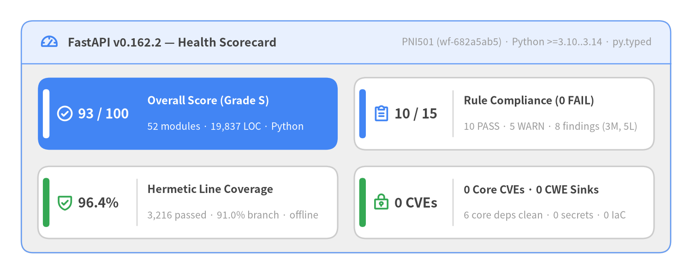
Source Code
from drawlib.canvas import save, setup
from drawlib.icons import phosphor
from drawlib.smartarts import KpiCards, Panel
from drawlib.styles import Colors, Styles
setup(width=146, height=58, dpi=150)
white_card = Styles.Neutral.patch(shape_fill_color=Colors.White)
outer = Panel(
"FastAPI v0.162.2 — Health Scorecard",
"PNI501 (wf-682a5ab5) · Python >=3.10..3.14 · py.typed",
style=Styles.Neutral,
header_style=Styles.PrimaryNeutral.patch(shape_line_width=1.2),
text_style=Styles.DarkBold.patch(text_size=12.0),
description_style=Styles.Muted.patch(text_size=10.0),
icon=phosphor.gauge,
icon_style=Styles.PrimaryBold,
header_variant="filled",
header_height=9.0,
)
outer.draw((4.5, 4.5), width=137.0, height=49.0, align="bottom_left")
inner_xy, inner_w, inner_h = outer.get_content_box(
(4.5, 4.5),
width=137.0,
height=49.0,
padding=(3.5, 3.0),
align="bottom_left",
)
kpis = KpiCards(
style=white_card,
metric_style=Styles.DarkBold.patch(text_size=14.0),
text_style=Styles.DarkBold.patch(text_size=11.2),
description_style=Styles.Muted.patch(text_size=10.0),
accent_style=Styles.PrimaryFlat,
icon_style=Styles.PrimaryBold,
accent_position="left_pill",
metric_layout="left_column",
metric_width_ratio=0.30,
spacing=3.5,
)
kpis.add(
"93 / 100",
"Overall Score (Grade S)",
"52 modules · 19,837 LOC · Python",
style=Styles.PrimaryFlat,
metric_style=Styles.WhiteBold.patch(text_size=14.0),
text_style=Styles.WhiteBold.patch(text_size=11.2),
description_style=Styles.White.patch(text_size=10.0),
accent_style=Styles.WhiteFlat,
icon=phosphor.check_circle,
icon_style=Styles.WhiteBold,
)
kpis.add(
"10 / 15",
"Rule Compliance (0 FAIL)",
"10 PASS · 5 WARN · 8 findings (3M, 5L)",
accent_style=Styles.PrimaryFlat,
icon=phosphor.clipboard_text,
icon_style=Styles.PrimaryBold,
)
kpis.add(
"96.4%",
"Hermetic Line Coverage",
"3,216 passed · 91.0% branch · offline",
accent_style=Styles.SuccessFlat,
icon=phosphor.shield_check,
icon_style=Styles.SuccessBold,
)
kpis.add(
"0 CVEs",
"0 Core CVEs · 0 CWE Sinks",
"6 core deps clean · 0 secrets · 0 IaC",
accent_style=Styles.SuccessFlat,
icon=phosphor.lock_key,
icon_style=Styles.SuccessBold,
)
kpis.draw(inner_xy, width=inner_w, height=inner_h, columns=2, align="bottom_left")
save()
| Diagnostic Attribute | Verified Metadata & Audit Baseline |
|---|---|
| Target Project | fastapi (v0.162.2, tag 3adc94ef, Python >=3.10..3.14, packaged PEP 561 fastapi/py.typed) |
| Target Language & Profile | python (library — High-performance ASGI 3.0 web API framework & OpenAPI 3.1 compiler) |
| Upstream License & Attribution | MIT License (LICENSE-FASTAPI; Copyright © Sebastián Ramírez — FastAPI® is a registered trademark of Sebastián Ramírez) |
| Diagnostic Workflow | pni501 (Workflow Run ID wf-682a5ab5, category audit) |
| Evaluated At | 2026-11-08T12:21:21+00:00 (2026-11-08T12:21:21.280043+00:00) |
| Overall Score & Grade | 93 / 100 (Grade S) — 10 / 15 rules PASS, 5 WARN, 0 FAIL (8 findings: 0 CRITICAL, 0 HIGH, 3 MEDIUM, 5 LOW) |
| Analyzed Codebase Scope | 52 source modules (19,837 LOC, 121 classes, 438 functions) & 273 core test modules (3,216 hermetic tests passed under --network=none) |
Unofficial Engineering Showcase Notice: This diagnostic report is an independent automated analysis generated with PNI501 and Drawlib to celebrate FastAPI's engineering design and is not affiliated with or endorsed by Sebastián Ramírez or the official FastAPI project.
1. Executive Summary
FastAPI v0.162.2 achieves an overall PNI501 engineering health score of 93/100 (Grade S) with 10/15 rules passed (5 WARN, 0 FAIL) across 52 Python source modules (19,837 LOC, 121 classes, 438 functions). Hermetic --network=none container testing confirms 3,216 passing tests (0 failures), 96.4% line coverage, and 91.0% branch coverage, while AST and Trivy scans verify 94.5% callable type coverage, zero dangerous CWE execution sinks, zero hardcoded secrets, and zero CVEs in core runtime dependencies.
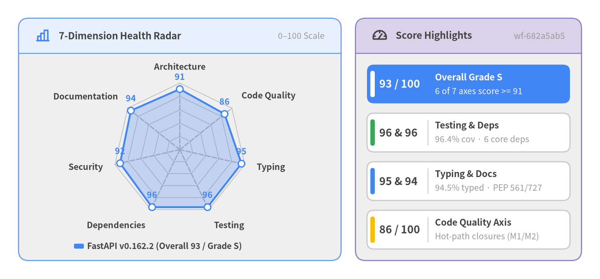
Source Code
from drawlib.canvas import save, setup
from drawlib.charts.radar import RadarChart
from drawlib.icons import phosphor
from drawlib.smartarts import KpiCards, Panel
from drawlib.styles import Colors, Styles
setup(width=146, height=68, dpi=150)
white_card = Styles.Neutral.patch(shape_fill_color=Colors.White)
# Left Panel: 7-Dimension Radar Chart
radar_panel = Panel(
"7-Dimension Health Radar",
"0–100 Scale",
style=Styles.Neutral,
header_style=Styles.PrimaryNeutral.patch(shape_line_width=1.2),
text_style=Styles.DarkBold.patch(text_size=11.5),
description_style=Styles.Muted.patch(text_size=10.0),
icon=phosphor.chart_bar,
icon_style=Styles.PrimaryBold,
header_variant="filled",
header_height=8.5,
)
radar_panel.draw((4.5, 4.5), width=78.5, height=59.0, align="bottom_left")
l_xy, l_w, l_h = radar_panel.get_content_box(
(4.5, 4.5),
width=78.5,
height=59.0,
padding=(2.5, 2.0),
align="bottom_left",
)
radar = RadarChart(
categories=[
"Architecture",
"Code Quality",
"Typing",
"Testing",
"Dependencies",
"Security",
"Documentation",
],
axis_line_style=Styles.MutedDashed,
axis_text_style=Styles.DarkBold.patch(text_size=10.2),
grid_style=Styles.MutedThin,
value_text_style=Styles.PrimaryBold.patch(text_size=10.2),
radius=16.2,
width=l_w,
height=l_h - 3.5,
min_value=0.0,
max_value=100.0,
levels=5,
grid_shape="polygon",
value_format="{:.0f}",
)
radar.add_series(
"FastAPI v0.162.2 (Overall 93 / Grade S)",
[91, 86, 95, 96, 96, 92, 94],
style=Styles.PrimaryFlat,
fill_alpha=0.26,
line_width=2.2,
)
radar.draw(xy=(l_xy[0], l_xy[1] + 3.5))
radar.draw_legend(
xy=(l_xy[0] + 11.0, l_xy[1] + 1.5),
text_style=Styles.DarkBold.patch(text_size=10.0),
orientation="horizontal",
)
# Right Panel: Headline Axis Callouts
kpi_panel = Panel(
"Score Highlights",
"wf-682a5ab5",
style=Styles.Neutral,
header_style=Styles.SecondaryNeutral.patch(shape_line_width=1.2),
text_style=Styles.DarkBold.patch(text_size=11.5),
description_style=Styles.Muted.patch(text_size=10.0),
icon=phosphor.gauge,
icon_style=Styles.DarkBold,
header_variant="filled",
header_height=8.5,
)
kpi_panel.draw((86.5, 4.5), width=55.0, height=59.0, align="bottom_left")
r_xy, r_w, r_h = kpi_panel.get_content_box(
(86.5, 4.5),
width=55.0,
height=59.0,
padding=(2.8, 2.8),
align="bottom_left",
)
highlights = KpiCards(
style=white_card,
metric_style=Styles.DarkBold.patch(text_size=12.8),
text_style=Styles.DarkBold.patch(text_size=10.8),
description_style=Styles.Muted.patch(text_size=10.0),
accent_style=Styles.PrimaryFlat,
accent_position="left_pill",
metric_layout="left_column",
metric_width_ratio=0.30,
spacing=2.4,
)
highlights.add(
"93 / 100",
"Overall Grade S",
"6 of 7 axes score >= 91",
style=Styles.PrimaryFlat,
metric_style=Styles.WhiteBold.patch(text_size=12.8),
text_style=Styles.WhiteBold.patch(text_size=10.8),
description_style=Styles.White.patch(text_size=10.0),
accent_style=Styles.WhiteFlat,
)
highlights.add(
"96 & 96",
"Testing & Deps",
"96.4% cov · 6 core deps",
accent_style=Styles.SuccessFlat,
)
highlights.add(
"95 & 94",
"Typing & Docs",
"94.5% typed · PEP 561/727",
accent_style=Styles.PrimaryFlat,
)
highlights.add(
"86 / 100",
"Code Quality Axis",
"Hot-path closures (M1/M2)",
accent_style=Styles.WarningFlat,
)
highlights.draw(r_xy, width=r_w, height=r_h, columns=1, align="bottom_left")
save()
1.1 Seven-Dimension Engineering Health Breakdown
Six of FastAPI's seven evaluated dimensions achieve Grade S (>= 90), anchored by Testing (96), Dependencies (96), Typing (95), and Documentation (94). Code Quality (86, Grade A) reflects an intentional architectural trade-off in FastAPI's core compiler: pre-building per-route request handling and OpenAPI synthesis inside dense closures so runtime ASGI dispatch remains fast and declarative.
| Dimension | Score | Grade | Engineering Rationale & Verified Evidence |
|---|---|---|---|
| Architecture | 91 / 100 | S | Cohesive 5-tier downward architecture across 52 source modules (19,837 LOC) bridging Starlette ASGI and Pydantic v2, with 2 cross-tier cycles guarded under TYPE_CHECKING and only 1 localized Tier-1 runtime cycle (_compat.v2 <-> params -> datastructures). |
| Code Quality | 86 / 100 | A | High API ergonomics, zero wildcard imports, and zero global mutable state, balanced against concentrated branching complexity inside hot-path request compilation (get_request_handler, cognitive=159) and OpenAPI path synthesis (get_openapi_path, cognitive=109). |
| Typing | 95 / 100 | S | 94.5% callable signature type coverage across 438 functions, packaged PEP 561 fastapi/py.typed marker, PEP 484 explicit X as X re-exports across 20 public symbols, and dual mypy strict + Astral ty verification. |
| Testing | 96 / 100 | S | 96.4% measured line coverage (4,628 / 4,801 statements) and 91.0% branch coverage across 3,216 passing core unit and ASGI TestClient tests inside an air-gapped (--network=none) non-root container with filterwarnings=['error']. |
| Dependencies | 96 / 100 | S | Ultra-lean 6-package core PEP 621 dependency footprint with flexible >= SemVer lower bounds, 0 unpinned specs, isolated PEP 735 dependency-groups, and a deterministic uv.lock. |
| Security | 92 / 100 | S | Zero CVEs across all 6 core runtime dependencies, zero hardcoded or committed secrets, zero container IaC misconfigurations, and zero dangerous CWE code sinks across 19,837 LOC; 1 HIGH transitive dnspython@2.8.0 advisory exists in dev/optional uv.lock. |
| Documentation | 94 / 100 | S | Pioneering PEP 727 Annotated[..., Doc()] inline parameter documentation across all public APIs with zero docstring-to-signature mismatches and zero empty docstrings. |
1.2 Audit Step Baseline, Hermetic Runtime & Supply-Chain Headlines
Across all six executed PNI501 audit stages (detailed in Chapter 4), zero rules failed (10 PASS, 5 WARN, 0 FAIL), yielding 8 consolidated location findings (0 CRITICAL, 0 HIGH, 3 MEDIUM, 5 LOW):
| Lowest-Scoring Audit Steps (Ascending) | Score & Grade | Rule Outcomes | Primary Diagnostic Signal |
|---|---|---|---|
python_ast_audit |
89 / 100 (A) | 4 PASS, 3 WARN, 0 FAIL |
94.5% type coverage and 0 CWE sinks across 52 files; warns on deliberate hot-path cognitive complexity (get_request_handler=159, get_openapi_path=109), 1 Tier-1 import cycle, and 1 mutable default (values={}). |
security_vulnerability_audit |
91 / 100 (S) | 0 PASS, 2 WARN, 0 FAIL |
0 core runtime CVEs, 0 secrets, 0 IaC misconfigs, and 0 CWE sinks; warns on 7 transitive dev/optional uv.lock advisories (1 HIGH: CVE-2026-114605) and ephemeral test-harness OS base-image packages. |
repo_structure_audit |
93 / 100 (S) | 4 PASS, 1 WARN, 0 FAIL |
Exemplary 6-package PEP 621 manifest, uv.lock, and fastapi/py.typed; standalone showcase snapshot omits repository-level SECURITY.md and Dependabot config. |
(The remaining three audit steps scored 94/100 (S) on library_hygiene_audit, 95/100 (S) on python_test_audit, and 97/100 (S) on container_runtime_audit.)
| Verification Domain | Gate Status | Key Quantitative Metrics |
|---|---|---|
| Container Runtime Verification | passed |
Harness build passed (0.79s cached, Python 3.12, non-root UID 10001); air-gapped --network=none pytest passed with 3,216 / 3,228 tests passing (0 failed, 0 errors, 12 skipped in 265.57s); 96.4% line & 91.0% branch coverage; library import smoke check passed. |
| Security & Supply-Chain Scan | failed (lockfile/OS) |
0 core runtime CVEs across all 6 production dependencies; app_cves=7 (0 CRITICAL, 1 HIGH CVE-2026-114605 in optional transitive dnspython@2.8.0 -> 2.9.0, 5 MEDIUM, 1 LOW) in dev/optional uv.lock; misconfigs=0; secrets=0; ast_dangerous_sinks=0. |
1.3 Key Engineering Strengths vs. Architectural Focal Points
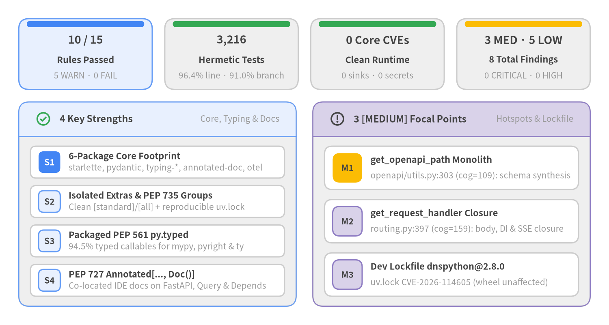
Source Code
from drawlib.canvas import save, setup
from drawlib.icons import phosphor
from drawlib.smartarts import CardList, KpiCards, Panel
from drawlib.styles import Colors, Styles
setup(width=146, height=78, dpi=150)
white_card = Styles.Neutral.patch(shape_fill_color=Colors.White)
# Top Band: 4 Executive Health KPI Cards
top_kpis = KpiCards(
style=Styles.Neutral,
metric_style=Styles.DarkBold.patch(text_size=13.0),
text_style=Styles.DarkBold.patch(text_size=10.5),
description_style=Styles.Muted.patch(text_size=10.0),
accent_style=Styles.PrimaryFlat,
accent_position="top_bar",
metric_layout="top_stack",
spacing=3.0,
)
top_kpis.add(
"10 / 15",
"Rules Passed",
"5 WARN · 0 FAIL",
style=Styles.PrimaryNeutral,
accent_style=Styles.PrimaryFlat,
)
top_kpis.add(
"3,216",
"Hermetic Tests",
"96.4% line · 91.0% branch",
accent_style=Styles.SuccessFlat,
)
top_kpis.add(
"0 Core CVEs",
"Clean Runtime",
"0 sinks · 0 secrets",
accent_style=Styles.SuccessFlat,
)
top_kpis.add(
"3 MED · 5 LOW",
"8 Total Findings",
"0 CRITICAL · 0 HIGH",
accent_style=Styles.WarningFlat,
)
top_kpis.draw((4.5, 56.5), width=137.0, height=17.0, columns=4, align="bottom_left")
# Bottom-Left Panel: 4 Key Strengths
s_panel = Panel(
"4 Key Strengths",
"Core, Typing & Docs",
style=Styles.Neutral,
header_style=Styles.PrimaryNeutral.patch(shape_line_width=1.2),
text_style=Styles.DarkBold.patch(text_size=11.2),
description_style=Styles.Muted.patch(text_size=10.0),
icon=phosphor.check_circle,
icon_style=Styles.SuccessBold,
header_variant="filled",
header_height=8.2,
)
s_panel.draw((4.5, 4.5), width=66.5, height=49.0, align="bottom_left")
s_xy, s_w, s_h = s_panel.get_content_box(
(4.5, 4.5),
width=66.5,
height=49.0,
padding=(2.8, 2.4),
align="bottom_left",
)
strengths = CardList(
style=white_card,
text_style=Styles.DarkBold.patch(text_size=10.5),
description_style=Styles.Muted.patch(text_size=10.0),
badge_shape="rounded_rect",
badge_style=Styles.PrimaryNeutral,
badge_text_style=Styles.DarkBold.patch(text_size=10.0),
direction="vertical",
spacing=1.8,
)
strengths.add(
"6-Package Core Footprint",
"starlette, pydantic, typing-*, annotated-doc, otel",
badge_text="S1",
badge_style=Styles.PrimaryFlat,
badge_text_style=Styles.WhiteBold.patch(text_size=10.0),
)
strengths.add(
"Isolated Extras & PEP 735 Groups",
"Clean [standard]/[all] + reproducible uv.lock",
badge_text="S2",
)
strengths.add(
"Packaged PEP 561 py.typed",
"94.5% typed callables for mypy, pyright & ty",
badge_text="S3",
)
strengths.add(
"PEP 727 Annotated[..., Doc()]",
"Co-located IDE docs on FastAPI, Query & Depends",
badge_text="S4",
)
strengths.draw(s_xy, width=s_w, height=s_h, align="bottom_left")
# Bottom-Right Panel: 3 [MEDIUM] Focal Points
r_panel = Panel(
"3 [MEDIUM] Focal Points",
"Hotspots & Lockfile",
style=Styles.Neutral,
header_style=Styles.SecondaryNeutral.patch(shape_line_width=1.2),
text_style=Styles.DarkBold.patch(text_size=11.2),
description_style=Styles.Muted.patch(text_size=10.0),
icon=phosphor.warning_circle,
icon_style=Styles.DarkBold,
header_variant="filled",
header_height=8.2,
)
r_panel.draw((75.0, 4.5), width=66.5, height=49.0, align="bottom_left")
f_xy, f_w, f_h = r_panel.get_content_box(
(75.0, 4.5),
width=66.5,
height=49.0,
padding=(2.8, 2.4),
align="bottom_left",
)
focal = CardList(
style=white_card,
text_style=Styles.DarkBold.patch(text_size=10.5),
description_style=Styles.Muted.patch(text_size=10.0),
badge_shape="rounded_rect",
badge_style=Styles.SecondaryNeutral,
badge_text_style=Styles.DarkBold.patch(text_size=10.0),
direction="vertical",
spacing=2.4,
)
focal.add(
"get_openapi_path Monolith",
"openapi/utils.py:303 (cog=109): schema synthesis",
badge_text="M1",
badge_style=Styles.WarningFlat,
badge_text_style=Styles.DarkBold.patch(text_size=10.0),
)
focal.add(
"get_request_handler Closure",
"routing.py:397 (cog=159): body, DI & SSE closure",
badge_text="M2",
)
focal.add(
"Dev Lockfile dnspython@2.8.0",
"uv.lock CVE-2026-114605 (wheel unaffected)",
badge_text="M3",
)
focal.draw(f_xy, width=f_w, height=f_h, align="bottom_left")
save()
Verified Engineering Strengths
- Ultra-Lean 6-Package Core Dependency Footprint:
pyproject.tomlrestricts runtime dependencies tostarlette>=0.46.0,pydantic>=2.9.0,typing-extensions>=4.8.0,typing-inspection>=0.4.2,annotated-doc>=0.0.2, andopentelemetry-api>=1.44.0, keeping downstream installation surfaces minimal and free of upper-bound version deadlocks. - Clean Separation of Optional Extras & PEP 735 Dependency Groups: Optional user-facing bundles (
[standard],[all]) are cleanly decoupled from development workflows (tests,docs,devunder[dependency-groups]), backed by a deterministicuv.lock. - Packaged PEP 561
fastapi/py.typedMarker: Combined with94.5%callable annotation completeness and explicitfrom ... import X as Xre-exports infastapi/__init__.py, downstream applications benefit from first-classmypy,pyright, andtystatic type checking. - Pioneering PEP 727
Annotated[..., Doc()]Inline Documentation: Public constructors and parameter factories (FastAPI,APIRouter,Path,Query,Body,Header,Cookie,Depends,Security) co-locate structured documentation directly inside type annotations, preventing signature-to-docstring drift (0mismatches across52modules).
Prioritized [MEDIUM] Focal Points & Remediation Outlook
Zero CRITICAL or HIGH findings exist in FastAPI's source code or core runtime dependencies. The three [MEDIUM] findings represent targeted maintainability and lockfile hygiene opportunities (mapped to concrete actions in Chapter 3 and Chapter 6):
[MEDIUM]common/maintainability—get_openapi_path(fastapi/openapi/utils.py:303): Merges operation parameters, request bodies, security scopes, callbacks, and multi-status response schemas inside a single230-line synthesis routine (cognitive=109). Factoring response and callback builders into composable helpers will simplify isolated unit maintenance.[MEDIUM]common/maintainability—get_request_handler(fastapi/routing.py:397): Embeds body parsing (JSON, multipart, form, raw),solve_dependenciesexecution, endpoint dispatch, streaming/SSE branching, and response validation inside a single408-line nested closure (cognitive=159). Extracting internal stage helpers while retaining route-registration pre-computation preserves FastAPI's hot-path ASGI throughput.[MEDIUM]common/security_vulnerability— Transitivednspython@2.8.0inuv.lock(CVE-2026-114605): Affected by DNS compression pointer traversal Denial of Service (CVSS7.5HIGH; fixed indnspython>=2.9.0), pulled transitively by optionalemail-validatorin the development lockfile. Corefastapiwheel installations are unaffected becausepyproject.tomldoes not pindnspython.
2. Architecture & Source Code Structure
FastAPI v0.162.2 organizes 52 Python source modules (19,837 LOC, 121 classes, 438 functions) into a disciplined 5-Tier Declarative ASGI Compiler & Type-Driven Adapter architecture (91/100, Grade S). Rather than relying on import-time global registries or reflection-heavy request dispatch, FastAPI compiles standard Python type annotations and PEP 727 Annotated[..., Doc()] metadata at route-registration time into pre-built Dependant directed acyclic graphs (DAGs), Pydantic v2 ModelField validators, and asynchronous Starlette ASGI closures.
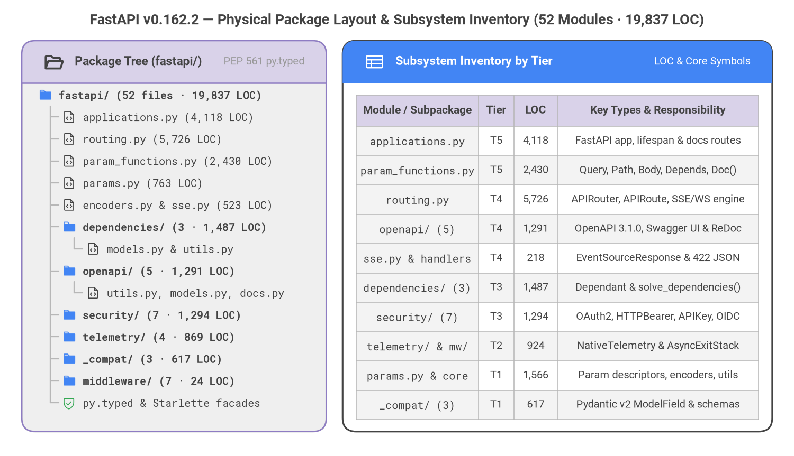
Source Code
from drawlib.canvas import save, setup
from drawlib.fonts import FontMonoSpace, FontRoboto
from drawlib.icons import phosphor
from drawlib.smartarts import Panel, Table, TreeNode
from drawlib.styles import Colors, Styles
from drawlib.text import text
setup(width=146, height=84, dpi=150)
text(
(73.0, 80.2),
"FastAPI v0.162.2 — Physical Package Layout & Subsystem Inventory (52 Modules · 19,837 LOC)",
style=Styles.DarkBold.patch(text_font=FontRoboto.ROBOTO_BOLD, text_size=13.0),
)
# Left Panel: Physical Package Hierarchy (TreeNode anchored Top-Left)
left_panel = Panel(
"Package Tree (fastapi/)",
"PEP 561 py.typed",
style=Styles.Neutral,
header_style=Styles.SecondaryNeutral.patch(shape_line_width=1.2),
text_style=Styles.DarkBold.patch(text_font=FontRoboto.ROBOTO_BOLD, text_size=11.0),
description_style=Styles.Muted.patch(text_font=FontRoboto.ROBOTO_REGULAR, text_size=9.5),
icon=phosphor.folder_open,
icon_style=Styles.DarkBold,
header_variant="filled",
header_height=7.8,
)
left_panel.draw((4.0, 4.5), width=56.0, height=72.0, align="bottom_left")
TreeNode.register_drawing_item(
name="pkg_dir",
location="before",
padding_width=3.8,
function=phosphor.folder,
style=Styles.Primary.patch(icon_color=Colors.Primary, icon_style="fill"),
args={"width": 2.7},
)
TreeNode.register_drawing_item(
name="py_mod",
location="before",
padding_width=3.8,
function=phosphor.file_code,
style=Styles.Dark.patch(icon_color=Colors.Dark),
args={"width": 2.6},
)
TreeNode.register_drawing_item(
name="typed_marker",
location="before",
padding_width=3.8,
function=phosphor.shield_check,
style=Styles.Success.patch(icon_color=Colors.Success),
args={"width": 2.6},
)
root = TreeNode(
"fastapi/ (52 files · 19,837 LOC)",
text_style=Styles.DarkBold.patch(text_font=FontMonoSpace.ROBOTO_MONO_BOLD, text_size=9.6),
line_style=Styles.Muted.patch(line_width=1.1),
line_horizontal_margin=2.2,
line_horizontal_length=2.4,
line_vertical_margin=4.05,
).set_drawing_item("pkg_dir")
mod_text = Styles.Dark.patch(text_font=FontMonoSpace.ROBOTO_MONO_REGULAR, text_size=9.5)
sub_text = Styles.DarkBold.patch(text_font=FontMonoSpace.ROBOTO_MONO_BOLD, text_size=9.5)
root.add("applications.py (4,118 LOC)", text_style=mod_text).set_drawing_item("py_mod")
root.add("routing.py (5,726 LOC)", text_style=mod_text).set_drawing_item("py_mod")
root.add("param_functions.py (2,430 LOC)", text_style=mod_text).set_drawing_item("py_mod")
root.add("params.py (763 LOC)", text_style=mod_text).set_drawing_item("py_mod")
root.add("encoders.py & sse.py (523 LOC)", text_style=mod_text).set_drawing_item("py_mod")
deps_dir = root.add("dependencies/ (3 · 1,487 LOC)", text_style=sub_text).set_drawing_item("pkg_dir")
deps_dir.add("models.py & utils.py", text_style=mod_text).set_drawing_item("py_mod")
oas_dir = root.add("openapi/ (5 · 1,291 LOC)", text_style=sub_text).set_drawing_item("pkg_dir")
oas_dir.add("utils.py, models.py, docs.py", text_style=mod_text).set_drawing_item("py_mod")
root.add("security/ (7 · 1,294 LOC)", text_style=sub_text).set_drawing_item("pkg_dir")
root.add("telemetry/ (4 · 869 LOC)", text_style=sub_text).set_drawing_item("pkg_dir")
root.add("_compat/ (3 · 617 LOC)", text_style=sub_text).set_drawing_item("pkg_dir")
root.add("middleware/ (7 · 24 LOC)", text_style=sub_text).set_drawing_item("pkg_dir")
root.add("py.typed & Starlette facades", text_style=mod_text).set_drawing_item("typed_marker")
root.draw(xy=(7.0, 66.5))
# Right Panel: Subsystem LOC & Architectural Tier Mapping (Table anchored Top-Left)
right_panel = Panel(
"Subsystem Inventory by Tier",
"LOC & Core Symbols",
style=Styles.White,
header_style=Styles.PrimaryFlat,
text_style=Styles.WhiteBold.patch(text_font=FontRoboto.ROBOTO_BOLD, text_size=11.0),
description_style=Styles.White.patch(text_font=FontRoboto.ROBOTO_REGULAR, text_size=9.5),
icon=phosphor.table,
icon_style=Styles.White,
header_variant="filled",
header_height=7.8,
)
right_panel.draw((63.0, 4.5), width=79.0, height=72.0, align="bottom_left")
tbl_body = Styles.Dark.patch(text_font=FontRoboto.ROBOTO_REGULAR, text_size=9.6)
tbl_code = Styles.DarkBold.patch(text_font=FontMonoSpace.ROBOTO_MONO_REGULAR, text_size=9.5)
tbl_hdr = Styles.DarkBold.patch(text_font=FontRoboto.ROBOTO_BOLD, text_size=10.0)
tbl = Table(
cell_style=Styles.White,
text_style=tbl_body,
header_cell_style=Styles.SecondaryNeutral,
header_text_style=tbl_hdr,
border_style=Styles.MutedThin,
)
tbl.set_style_cell_evenodd(
even_color=Colors.Light,
even_text_style=tbl_body,
odd_color=Colors.White,
odd_text_style=tbl_body,
)
tbl.set_style_cell_header(
background_color=Colors.SecondaryNeutral,
text_style=tbl_hdr,
)
tbl.set_style_cell(
background_color=Colors.Light,
text_style=tbl_code,
rows=[1, 2, 3, 4, 5, 6, 7, 8, 9, 10],
columns=[0],
)
inventory_rows = [
["Module / Subpackage", "Tier", "LOC", "Key Types & Responsibility"],
["applications.py", "T5", "4,118", "FastAPI app, lifespan & docs routes"],
["param_functions.py", "T5", "2,430", "Query, Path, Body, Depends, Doc()"],
["routing.py", "T4", "5,726", "APIRouter, APIRoute, SSE/WS engine"],
["openapi/ (5)", "T4", "1,291", "OpenAPI 3.1.0, Swagger UI & ReDoc"],
["sse.py & handlers", "T4", "218", "EventSourceResponse & 422 JSON"],
["dependencies/ (3)", "T3", "1,487", "Dependant & solve_dependencies()"],
["security/ (7)", "T3", "1,294", "OAuth2, HTTPBearer, APIKey, OIDC"],
["telemetry/ & mw/", "T2", "924", "NativeTelemetry & AsyncExitStack"],
["params.py & core", "T1", "1,566", "Param descriptors, encoders, utils"],
["_compat/ (3)", "T1", "617", "Pydantic v2 ModelField & schemas"],
]
tbl.draw_flexible(
xy=(65.5, 66.5),
column_widths=[22.5, 6.5, 8.0, 37.0],
row_heights=[5.8] + [5.4] * 10,
data=inventory_rows,
align="top_left",
)
save()
2.1 System Profile, Core Dependency Stack & External Integrations
FastAPI operates purely as an embeddable library runtime (runtime_types = ["library"], Python >=3.10..3.14) with a packaged PEP 561 fastapi/py.typed marker for strict downstream static type checking (mypy, pyright, and ty). Its core installation surface is intentionally constrained to six SemVer-floored runtime packages (0 unpinned specifiers, 0 core runtime CVEs), delegating transport servers, multipart parsers, and alternative JSON serializers to optional extras ([standard], [all]) and PEP 735 [dependency-groups].
Core Dependency (pyproject.toml) |
Version Floor | Architectural Role in FastAPI v0.162.2 |
Primary Consumer Modules |
|---|---|---|---|
starlette |
>=0.46.0 |
Asynchronous ASGI 3.0 lifecycle, HTTP/WebSocket routing primitives, middleware wrapping, Request/Response, BackgroundTasks, and TestClient. |
applications.py, routing.py, middleware/*, responses.py |
pydantic (+ pydantic-core) |
>=2.9.0 |
Rust-backed TypeAdapter validation, response serialization, composite body models, and GenerateJsonSchema OpenAPI $defs generation. |
_compat/v2.py, _compat/shared.py, params.py, openapi/models.py |
typing-inspection |
>=0.4.2 |
High-speed runtime introspection of Annotated[T, ...] qualifiers, Union branches, and generic type aliases during route compilation. |
dependencies/utils.py, _compat/v2.py |
typing-extensions |
>=4.8.0 |
Backported typing constructs (Annotated, TypedDict, Literal, override) ensuring uniform behavior across Python 3.10 through 3.14. |
types.py, params.py, param_functions.py, applications.py |
annotated-doc |
>=0.0.2 |
PEP 727 Doc("...") inline parameter documentation co-located directly inside public callable signatures for rich IDE hover tooltips. |
applications.py, routing.py, param_functions.py |
opentelemetry-api |
>=1.44.0 |
Zero-vendor-lock-in distributed tracing spans, route-template attributes, runtime lifespan hooks, and exception telemetry recording. | telemetry/_asgi.py, telemetry/_runtime.py, telemetry/_api.py |
External Integration Boundaries
- ASGI 3.0 Application Servers: Uvicorn, Hypercorn, Granian, or Fastar invoke
FastAPI.__call__(scope, receive, send)directly with zero framework-specific server coupling. - Starlette ASGI Subsystems:
FastAPIsubclassesstarlette.applications.Starlette, composing Starlette'sRouter, lifespan context managers,ServerErrorMiddleware,ExceptionMiddleware, and thin developer re-export facades (requests.py,websockets.py,staticfiles.py,templating.py,testclient.py). - Pydantic v2 Core Schema Engine:
fastapi/_compat/v2.pyencapsulatesModelField,TypeAdapter, andGenerateJsonSchema, insulating routing and dependency resolution from internal Pydantic API churn. - OpenTelemetry SDK & OTLP Exporters:
fastapi/telemetry/_asgi.py(NativeTelemetry,ExceptionTelemetryMiddleware) and_runtime.pyemit low-overhead spans and exception events whenever an OpenTelemetry tracer/meter provider is configured. - Interactive API Documentation Bundles:
fastapi/openapi/docs.pyserves self-contained HTML entrypoints for Swagger UI (/docs, plus OAuth2 redirect support) and ReDoc (/redoc) bound to the lazy-synthesized/openapi.jsondocument.
2.2 Five-Tier Declarative Architecture & Boundary Assessment
FastAPI enforces a strict top-down compilation and execution pipeline across five architectural tiers, progressing from public developer facades (Tier 5) down to Pydantic v2 schema/validation descriptors (Tier 1). Figure 2.2 overlays PNI501's deterministic module_hotspots risk scores (0.12 to 0.27) directly onto the five-tier UML component dependency graph.
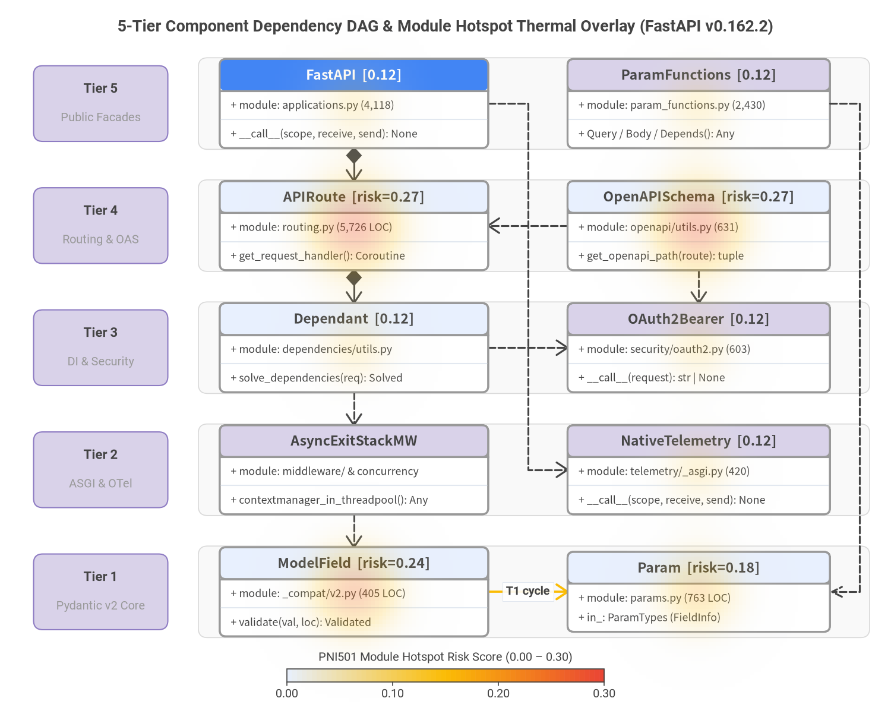
Source Code
from drawlib.canvas import save, setup
from drawlib.charts.heatmap import HeatmapOverlay
from drawlib.diagrams.class_diagram import ClassDiagram, ClassNode
from drawlib.fonts import FontMonoSpace, FontRoboto
from drawlib.lines import lines
from drawlib.shapes import rectangle
from drawlib.styles import Colors, Styles
from drawlib.text import text
setup(width=146, height=118, dpi=150)
text(
(73.0, 113.5),
"5-Tier Component Dependency DAG & Module Hotspot Thermal Overlay (FastAPI v0.162.2)",
style=Styles.DarkBold.patch(text_font=FontRoboto.ROBOTO_BOLD, text_size=13.0),
)
# Subtle horizontal tier swimlanes & left-hand tier badges (Z-Layer 1)
tier_specs = [
(101.0, "Tier 5", "Public Facades"),
(81.0, "Tier 4", "Routing & OAS"),
(61.0, "Tier 3", "DI & Security"),
(41.0, "Tier 2", "ASGI & OTel"),
(21.0, "Tier 1", "Pydantic v2 Core"),
]
lane_style = Styles.Neutral.patch(
shape_fill_color=Colors.Gray1.patch(alpha=0.45),
shape_line_color=Colors.Gray3,
shape_line_width=0.8,
shape_r=1.5,
)
badge_style = Styles.SecondaryNeutral.patch(shape_r=1.5, shape_line_width=1.0)
for cy, t_num, t_sub in tier_specs:
rectangle((87.5, cy), width=110.0, height=15.0, style=lane_style)
rectangle((16.5, cy), width=22.0, height=12.4, style=badge_style)
text(
(16.5, cy + 2.3),
t_num,
style=Styles.DarkBold.patch(text_font=FontRoboto.ROBOTO_BOLD, text_size=10.5),
)
text(
(16.5, cy - 2.4),
t_sub,
style=Styles.Muted.patch(text_font=FontRoboto.ROBOTO_REGULAR, text_size=9.5),
)
# 5-Tier ClassDiagram (Z-Layer 2)
cd = ClassDiagram(
width=146.0,
height=118.0,
node_style=Styles.Neutral.patch(
shape_fill_color=Colors.White,
shape_line_color=Colors.Gray6,
text_color=Colors.Dark,
text_font=FontMonoSpace.ROBOTO_MONO_REGULAR,
text_size=9.5,
),
header_style=Styles.PrimaryNeutral.patch(
shape_line_color=Colors.Gray6,
text_color=Colors.Dark,
text_font=FontRoboto.ROBOTO_BOLD,
text_size=10.2,
),
edge_style=Styles.Dark.patch(line_width=1.5),
edge_text_style=Styles.DarkBold.patch(text_font=FontRoboto.ROBOTO_BOLD, text_size=9.5),
)
hero_hdr = Styles.PrimaryFlat.patch(
text_color=Colors.White,
text_font=FontRoboto.ROBOTO_BOLD,
text_size=10.2,
)
sec_hdr = Styles.SecondaryNeutral.patch(
shape_line_color=Colors.Gray6,
text_color=Colors.Dark,
text_font=FontRoboto.ROBOTO_BOLD,
text_size=10.2,
)
# Tier 5 (cy=101.0)
app_node = cd.add(
ClassNode("FastAPI [0.12]", width=44.0, header_style=hero_hdr)
.add_attribute("module", "applications.py (4,118)")
.add_method("__call__", "scope, receive, send", "None"),
xy=(58.0, 101.0),
)
param_fn_node = cd.add(
ClassNode("ParamFunctions [0.12]", width=43.0, header_style=sec_hdr)
.add_attribute("module", "param_functions.py (2,430)")
.add_method("Query / Body / Depends", "", "Any"),
xy=(114.5, 101.0),
)
# Tier 4 (cy=81.0)
route_node = cd.add(
ClassNode("APIRoute [risk=0.27]", width=44.0)
.add_attribute("module", "routing.py (5,726 LOC)")
.add_method("get_request_handler", "", "Coroutine"),
xy=(58.0, 81.0),
)
openapi_node = cd.add(
ClassNode("OpenAPISchema [risk=0.27]", width=43.0)
.add_attribute("module", "openapi/utils.py (631)")
.add_method("get_openapi_path", "route", "tuple"),
xy=(114.5, 81.0),
)
# Tier 3 (cy=61.0)
dep_node = cd.add(
ClassNode("Dependant [0.12]", width=44.0)
.add_attribute("module", "dependencies/utils.py")
.add_method("solve_dependencies", "req", "Solved"),
xy=(58.0, 61.0),
)
sec_node = cd.add(
ClassNode("OAuth2Bearer [0.12]", width=43.0, header_style=sec_hdr)
.add_attribute("module", "security/oauth2.py (603)")
.add_method("__call__", "request", "str | None"),
xy=(114.5, 61.0),
)
# Tier 2 (cy=41.0)
mw_node = cd.add(
ClassNode("AsyncExitStackMW", width=44.0, header_style=sec_hdr)
.add_attribute("module", "middleware/ & concurrency")
.add_method("contextmanager_in_threadpool", "", "Any"),
xy=(58.0, 41.0),
)
otel_node = cd.add(
ClassNode("NativeTelemetry [0.12]", width=43.0, header_style=sec_hdr)
.add_attribute("module", "telemetry/_asgi.py (420)")
.add_method("__call__", "scope, receive, send", "None"),
xy=(114.5, 41.0),
)
# Tier 1 (cy=21.0)
v2_node = cd.add(
ClassNode("ModelField [risk=0.24]", width=44.0)
.add_attribute("module", "_compat/v2.py (405 LOC)")
.add_method("validate", "val, loc", "Validated"),
xy=(58.0, 21.0),
)
param_node = cd.add(
ClassNode("Param [risk=0.18]", width=43.0)
.add_attribute("module", "params.py (763 LOC)")
.add_attribute("in_", "ParamTypes (FieldInfo)"),
xy=(114.5, 21.0),
)
# Downward architectural dependencies (clean dedicated ports & >=6.4 vertical gaps)
cd.connect(app_node, route_node, "composition", directed=True, start_side="bottom", end_side="top")
cd.connect(app_node, otel_node, "dependency", start_side="right", end_side="left")
cd.connect(openapi_node, route_node, "dependency", start_side="left", end_side="right")
cd.connect(route_node, dep_node, "composition", directed=True, start_side="bottom", end_side="top")
cd.connect(openapi_node, sec_node, "dependency", start_side="bottom", end_side="top")
cd.connect(dep_node, sec_node, "dependency", start_side="right", end_side="left")
cd.connect(dep_node, mw_node, "dependency", start_side="bottom", end_side="top")
cd.connect(mw_node, v2_node, "dependency", start_side="bottom", end_side="top")
cd.connect(
v2_node,
param_node,
"association",
directed=True,
label="T1 cycle",
start_side="right",
end_side="left",
style=Styles.WarningBold.patch(line_width=1.8),
)
cd.draw(xy=(0.0, 0.0))
# Outer right-hand orthogonal link: ParamFunctions (Tier 5) -> Param (Tier 1)
lines(
[(136.0, 101.0), (140.8, 101.0), (140.8, 21.0), (136.0, 21.0)],
arrow_head="->",
style=Styles.DarkDashed.patch(line_width=1.5),
)
# Thermal Risk HeatmapOverlay (Z-Layer 3 — show_contour_lines=False per PNI guardrail)
overlay = HeatmapOverlay(
styles=[Styles.PrimaryNeutral, Styles.WarningFlat, Styles.DangerFlat],
width=146.0,
height=118.0,
mode="smooth",
min_value=0.0,
max_value=0.30,
max_alpha=0.35,
show_contour_lines=False,
)
overlay.add_spot(route_node, value=0.27, radius=16.5)
overlay.add_spot(openapi_node, value=0.27, radius=16.5)
overlay.add_spot(v2_node, value=0.24, radius=15.5)
overlay.add_spot(param_node, value=0.18, radius=14.5)
overlay.add_spot(app_node, value=0.12, radius=13.0)
overlay.add_spot(param_fn_node, value=0.12, radius=13.0)
overlay.add_spot(dep_node, value=0.12, radius=13.0)
overlay.add_spot(sec_node, value=0.12, radius=12.5)
overlay.add_spot(otel_node, value=0.12, radius=12.5)
overlay.draw(xy=(0.0, 0.0))
overlay.draw_colorbar(
xy=(47.0, 6.2),
text_style=Styles.Dark.patch(text_font=FontRoboto.ROBOTO_REGULAR, text_size=9.8),
length=52.0,
thickness=2.2,
num_ticks=4,
value_format="{:.2f}",
label="PNI501 Module Hotspot Risk Score (0.00 – 0.30)",
)
save()
Five-Tier Layer Specifications
| Layer | Module Paths (52 Total) |
Allowed Downward Dependencies | Core Architectural Responsibilities |
|---|---|---|---|
| Tier 5: Public Application & Developer Facades (12 files) | fastapi/__init__.py, __main__.py, cli.py, applications.py, param_functions.py, requests.py, responses.py, websockets.py, staticfiles.py, templating.py, testclient.py, background.py |
Tiers 4, 3, 2, 1 |
Top-level FastAPI ASGI application class, PEP 727 Doc()-annotated parameter factory functions (Query, Path, Body, Header, Cookie, Form, File, Depends, Security), CLI stub, and ergonomic Starlette re-export facades. |
| Tier 4: Routing, Streaming & OpenAPI Synthesis (8 files) | fastapi/routing.py, sse.py, openapi/__init__.py, openapi/utils.py, openapi/docs.py, openapi/models.py, openapi/constants.py, exception_handlers.py |
Tiers 3, 2, 1 |
Compiles endpoint callables into Starlette ASGI handlers (APIRouter, APIRoute, APIWebSocketRoute), native Server-Sent Events (EventSourceResponse, ServerSentEvent) & JSONL streaming, HTTP/WebSocket 422 exception handlers, and OpenAPI 3.1.0 / Swagger UI / ReDoc generation. |
| Tier 3: Dependency Injection & Security Subsystems (10 files) | fastapi/dependencies/{__init__,utils,models}.py, fastapi/security/{__init__,oauth2,http,api_key,open_id_connect_url,base,utils}.py |
Tiers 2, 1 |
Introspects callable signatures via typing-inspection into recursive Dependant DAGs, resolves per-request sub-dependencies with memoization and AsyncExitStack yield teardown, and enforces OAuth2, HTTP Basic/Bearer/Digest, APIKey, and OpenID Connect security schemes. |
| Tier 2: ASGI Middleware, Concurrency & Native Telemetry (12 files) | fastapi/middleware/{__init__,asyncexitstack,cors,gzip,httpsredirect,trustedhost,wsgi}.py, concurrency.py, fastapi/telemetry/{__init__,_asgi,_runtime,_api}.py |
Tier 1 |
Orchestrates request-scoped AsyncExitStackMiddleware cleanup, synchronous contextmanager worker-thread offloading (contextmanager_in_threadpool), Starlette middleware re-exports, and native OpenTelemetry span/exception instrumentation (NativeTelemetry). |
| Tier 1: Pydantic v2 Adapter, Descriptors & Core Types (10 files) | fastapi/_compat/{__init__,v2,shared}.py, params.py, datastructures.py, encoders.py, exceptions.py, utils.py, types.py, logger.py |
None ([] — Leaf Foundation) |
Encapsulates Pydantic v2 ModelField / TypeAdapter validation and GenerateJsonSchema hooks, FieldInfo parameter descriptors (Param hierarchy), UploadFile / DefaultPlaceholder data structures, jsonable_encoder, and core exception hierarchies. |
Architectural Boundary & Coupling Assessment
Static AST import-graph verification across all 52 source modules confirms strong downward architectural discipline:
- Cleanly Guarded Cross-Tier Type Cycles (
2, Zero Runtime Impact): Two upward/peer type-annotation references—fastapi.dependencies.utils -> fastapi.utils -> fastapi.routing -> fastapi.dependencies.utilsandfastapi.routing <-> fastapi.utils—are strictly isolated insideif TYPE_CHECKING:blocks, preventing import-time circularity while preserving full static type precision. - Localized Intra-Tier-1 Runtime Cycle (
1): Exactly one runtime circular import chain exists inside the foundational leaf tier:fastapi._compat.v2 -> fastapi.params -> fastapi.datastructures -> fastapi._compat.v2(driven by runtimeParam/UploadFile/DefaultPlaceholdercross-checks). No runtime cycles cross tier boundaries. - Private Submodule Boundary Crossings (
4):fastapi/applications.py,fastapi/routing.py, andfastapi/background.pyperform four internal imports directly from private underscore modules (fastapi.telemetry._asgi,fastapi.telemetry._runtime, andfastapi.telemetry._api) rather than routing through a package-levelfastapi/telemetry/__init__.pyfacade. - Zero Global Mutable State (
0): All route trees, OpenAPI schemas, anddependency_overrideslive on explicitFastAPIorAPIRouterinstances, allowing multiple independent applications to coexist cleanly in the same Python process.
2.3 Pre-Sorted Module Hotspots & Source Module Inventory
Pre-Sorted Module Hotspots (module_hotspots)
PNI501 ranks repository targets by composite static complexity, maintainability, typing, and supply-chain finding density. In FastAPI v0.162.2, maximum module risk caps at a modest 0.27 (zero CRITICAL or HIGH source code findings), concentrated in the two intentional compilation/synthesis workhorses (fastapi/routing.py and fastapi/openapi/utils.py):
| Rank | Target Path | LOC | risk_score |
Findings | Triggered Rules | Primary Engineering Driver |
|---|---|---|---|---|---|---|
| 1 | fastapi/routing.py |
5,726 |
0.27 |
1 medium |
common/maintainability |
get_request_handler (cognitive=159, 408 LOC) unifies body parsing, solve_dependencies(), endpoint execution, SSE/JSONL streaming, and response serialization in one hot-path closure. |
| 2 | fastapi/openapi/utils.py |
631 |
0.27 |
1 medium |
common/maintainability |
get_openapi_path (cognitive=109, 230 LOC) merges parameters, request bodies, OAuth2 scopes, callbacks, and status responses in one synthesis pass. |
| 3 | fastapi/_compat/v2.py |
405 |
0.24 |
2 low |
common/architecture, python/code_quality |
Participates in the intra-Tier-1 runtime import cycle with params.py / datastructures.py and defines a values: dict[str, Any] = {} default in ModelField.validate. |
| 4 | fastapi/params.py |
763 |
0.18 |
1 low |
python/typing |
Descriptor __init__ signatures omit explicit -> None return annotations across Param / FieldInfo subclasses (Path.in_ untyped class attribute). |
| 5 | uv.lock |
0 |
0.15 |
1 medium |
common/security_vulnerability |
Transitive optional/dev lockfile entry dnspython@2.8.0 carries CVE-2026-114605 (fixed in 2.9.0; core fastapi installs are unaffected). |
| 6 | fastapi/applications.py |
4,118 |
0.12 |
0 |
— |
Extensive inline PEP 727 Doc() reference documentation across FastAPI.__init__ and HTTP verb decorators; runtime setup() cognitive complexity is only 12. |
| 7 | fastapi/param_functions.py |
2,430 |
0.12 |
0 |
— |
Pure declarative factory functions (Path, Query, Header, Cookie, Body, Form, File, Depends, Security) rich in @overload and Doc() metadata. |
| 8 | fastapi/dependencies/utils.py |
1,294 |
0.12 |
0 |
— |
Recursive signature analyzer (get_dependant, analyze_param) and async DAG solver (solve_dependencies); routing type cycle guarded by TYPE_CHECKING. |
Representative Source Module Inventory (52 Modules, 19,837 LOC)
| Module / Subpackage | Tier | LOC | Public Types | Key Callables & Architectural Role |
|---|---|---|---|---|
fastapi/__init__.py |
T5 | 22 |
(20 PEP 484 X as X exports) |
Canonical package entrypoint exporting FastAPI, APIRouter, Depends, Query, Body, HTTPException, status, and UploadFile. |
fastapi/applications.py |
T5 | 4,118 |
FastAPI |
Top-level ASGI application orchestrating middleware stack assembly, OpenTelemetry lifespan wrapping, OpenAPI caching, and route registration. |
fastapi/param_functions.py |
T5 | 2,430 |
— | Developer-facing Path, Query, Header, Cookie, Body, Form, File, Depends, and Security factory functions. |
fastapi/responses.py & background.py |
T5 | 126 |
ORJSONResponse, UJSONResponse, BackgroundTasks |
Optional high-throughput JSON response classes (76 LOC) and telemetry-aware BackgroundTasks subclass (50 LOC). |
fastapi/cli.py & __main__.py |
T5 | 12 |
— | main() CLI entrypoint delegating cleanly to fastapi_cli.cli.main (raises RuntimeError without sys.exit if [standard] extra is absent). |
fastapi/{requests,websockets,staticfiles,templating,testclient}.py |
T5 | 8 |
— | Five 1–3 LOC convenience re-export modules surfacing Starlette's Request, WebSocket, StaticFiles, Jinja2Templates, and TestClient. |
fastapi/routing.py |
T4 | 5,726 |
APIRouter, APIRoute, APIWebSocketRoute, RouteContext |
Core route compiler (get_request_handler, get_websocket_app, run_endpoint_function, serialize_response, iter_route_contexts). |
fastapi/sse.py |
T4 | 190 |
EventSourceResponse, ServerSentEvent |
Zero-internal-dependency native Server-Sent Events serializer (format_sse_event) and streaming response engine. |
fastapi/openapi/utils.py |
T4 | 631 |
— | get_openapi, get_openapi_path, get_fields_from_routes, get_openapi_operation_metadata — OpenAPI 3.1.0 specification synthesizer. |
fastapi/openapi/models.py & constants.py |
T4 | 319 |
OpenAPI, PathItem, Operation, Schema, Components, OAuthFlows (+34) |
Strictly typed Pydantic v2 models representing the OpenAPI 3.1.0 & JSON Schema specification (316 LOC) plus REF_PREFIX constants (3 LOC). |
fastapi/openapi/docs.py |
T4 | 341 |
— | get_swagger_ui_html, get_redoc_html, get_swagger_ui_oauth2_redirect_html — interactive browser documentation renderers. |
fastapi/exception_handlers.py |
T4 | 28 |
— | http_exception_handler, request_validation_exception_handler, websocket_request_validation_exception_handler. |
fastapi/dependencies/models.py |
T3 | 193 |
Dependant |
Immutable-style dataclass node representing a callable's typed parameters, sub-dependencies, security requirements, and cache key. |
fastapi/dependencies/utils.py |
T3 | 1,294 |
ParamDetails, SolvedDependency |
get_dependant, analyze_param, solve_dependencies, request_params_to_args, request_body_to_args — static analyzer and runtime DI executor. |
fastapi/security/{oauth2,http,api_key,open_id_connect_url,base,utils}.py |
T3 | 1,294 |
OAuth2PasswordBearer, SecurityScopes, HTTPBearer, HTTPBasic, HTTPDigest, APIKeyHeader, OpenIdConnect |
Seven-file pluggable authentication & scope-enforcement suite integrated natively with Depends() / Security() (secrets.compare_digest in HTTP Basic/Digest). |
fastapi/telemetry/{_asgi,_api,_runtime,__init__}.py |
T2 | 869 |
NativeTelemetry, ExceptionTelemetryMiddleware, TelemetryConfig, TelemetryData |
Four-file native OpenTelemetry subsystem (get_telemetry_data, lifespan) capturing ASGI HTTP/WebSocket spans and uncaught exceptions. |
fastapi/concurrency.py & middleware/* |
T2 | 55 |
AsyncExitStackMiddleware |
contextmanager_in_threadpool (31 LOC) plus AsyncExitStackMiddleware (12 LOC) and 6 Starlette middleware re-exports (12 LOC). |
fastapi/_compat/{v2,shared,__init__}.py |
T1 | 617 |
ModelField, GenerateJsonSchema |
evaluate_forwardref, get_definitions, create_body_model, lenient_issubclass, field_annotation_is_scalar — Pydantic v2 adapter layer. |
fastapi/params.py |
T1 | 763 |
Param, ParamTypes, Path, Query, Header, Cookie, Body, Form, File, Depends, Security |
Descriptor subclasses extending Pydantic FieldInfo with parameter location (in_), media types, and OpenAPI metadata. |
fastapi/encoders.py |
T1 | 333 |
Color, PyExtraColor |
jsonable_encoder, isoformat, decimal_encoder — recursive Python-object-to-JSON-primitive serializer. |
fastapi/exceptions.py |
T1 | 201 |
FastAPIError, HTTPException, RequestValidationError, ResponseValidationError, DependencyScopeError (+6) |
Structured framework, validation, dependency-scope, and WebSocket exception hierarchy. |
fastapi/{datastructures,utils,types,logger}.py |
T1 | 267 |
UploadFile, DefaultPlaceholder |
Default() sentinel & UploadFile wrapper (141 LOC), create_model_field / deep_dict_update (114 LOC), type aliases (10 LOC), and named fastapi logger (2 LOC). |
2.4 Entry Points, Runtime Execution Lifecycles, State & Concurrency Model
FastAPI separates import-time signature compilation from request-time asynchronous execution and lazy first-hit OpenAPI synthesis. Figure 2.3 traces these three lifecycles along a vertical execution roadmap.
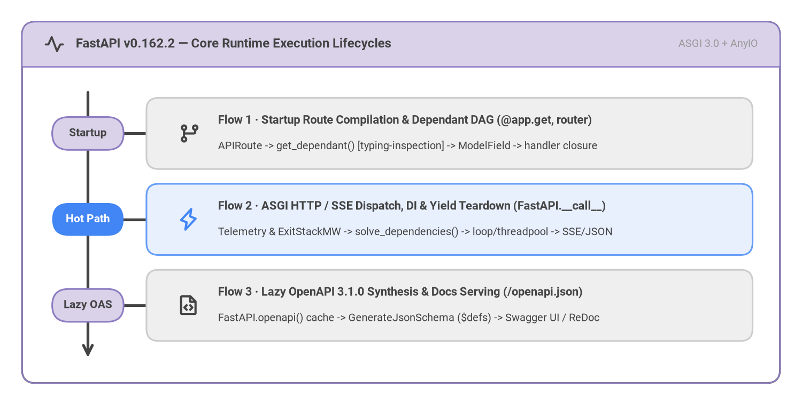
Source Code
from drawlib.canvas import save, setup
from drawlib.fonts import FontRoboto
from drawlib.icons import phosphor
from drawlib.smartarts import Panel, Roadmap
from drawlib.styles import Styles
setup(width=146, height=74, dpi=150)
frame = Panel(
"FastAPI v0.162.2 — Core Runtime Execution Lifecycles",
"ASGI 3.0 + AnyIO",
style=Styles.White,
header_style=Styles.SecondaryNeutral.patch(shape_line_width=1.2),
text_style=Styles.DarkBold.patch(text_font=FontRoboto.ROBOTO_BOLD, text_size=11.5),
description_style=Styles.Muted.patch(text_font=FontRoboto.ROBOTO_REGULAR, text_size=9.8),
icon=phosphor.pulse,
icon_style=Styles.DarkBold,
header_variant="filled",
header_height=8.2,
)
frame.draw((4.0, 4.0), width=138.0, height=66.0, align="bottom_left")
inner_xy, inner_w, inner_h = frame.get_content_box(
(4.0, 4.0),
width=138.0,
height=66.0,
padding=(4.0, 3.2),
align="bottom_left",
)
rm = Roadmap(
style=Styles.Neutral,
text_style=Styles.DarkBold.patch(text_font=FontRoboto.ROBOTO_BOLD, text_size=10.6),
description_style=Styles.Dark.patch(text_font=FontRoboto.ROBOTO_REGULAR, text_size=9.6),
spine_style=Styles.DarkBold,
badge_style=Styles.SecondaryNeutral,
badge_text_style=Styles.DarkBold.patch(text_font=FontRoboto.ROBOTO_BOLD, text_size=10.0),
icon_style=Styles.DarkBold,
direction="vertical",
curve_bend=0.0,
card_shape="rounded_rect",
spacing=3.0,
)
rm.add(
"Flow 1 · Startup Route Compilation & Dependant DAG (@app.get, router)",
"APIRoute -> get_dependant() [typing-inspection] -> ModelField -> handler closure",
badge_text="Startup",
icon=phosphor.git_branch,
)
rm.add(
"Flow 2 · ASGI HTTP / SSE Dispatch, DI & Yield Teardown (FastAPI.__call__)",
"Telemetry & ExitStackMW -> solve_dependencies() -> loop/threadpool -> SSE/JSON",
badge_text="Hot Path",
icon=phosphor.lightning,
style=Styles.PrimaryNeutral,
badge_style=Styles.PrimaryFlat,
badge_text_style=Styles.WhiteBold.patch(text_font=FontRoboto.ROBOTO_BOLD, text_size=10.0),
icon_style=Styles.PrimaryBold,
)
rm.add(
"Flow 3 · Lazy OpenAPI 3.1.0 Synthesis & Docs Serving (/openapi.json)",
"FastAPI.openapi() cache -> GenerateJsonSchema ($defs) -> Swagger UI / ReDoc",
badge_text="Lazy OAS",
icon=phosphor.file_code,
)
rm.draw(xy=inner_xy, width=inner_w, height=inner_h, align="bottom_left")
save()
Public Entry Points & Three Execution Lifecycles
FastAPI exposes four canonical entry points: fastapi/__init__.py (re-exporting 20 public symbols via explicit PEP 484 X as X aliases), fastapi/applications.py:FastAPI, fastapi/routing.py:APIRouter, and fastapi/cli.py:main.
- Flow 1 — Startup Route Compilation &
DependantDAG Construction- Trigger: Decorator registration (
@app.get,@router.post) or router composition (app.include_router) at module import / startup time. - Execution Chain:
FastAPI/APIRouterinstantiates anAPIRoute(orAPIWebSocketRoute) infastapi/routing.py->APIRoute.__init__invokesget_dependant()andanalyze_param()(fastapi/dependencies/utils.py), usingtyping-inspectionto classify path, query, header, cookie, body,Depends(), andSecurity()parameters -> multi-field or scalar body parameters are compiled into Pydantic v2ModelField/TypeAdaptervalidators (fastapi/_compat/v2.py) ->APIRoute.get_route_handler()pre-builds the asynchronous ASGIrequest_responseclosure viaget_request_handler(), shifting reflection work out of the per-request hot path.
- Trigger: Decorator registration (
- Flow 2 — ASGI HTTP / SSE Request Dispatch, DI Resolution &
AsyncExitStackYield Teardown- Trigger: Incoming ASGI HTTP or WebSocket
scopedelivered toFastAPI.__call__(scope, receive, send). - Execution Chain:
NativeTelemetry(when configured),ServerErrorMiddleware, user ASGI middlewares,ExceptionMiddleware, andAsyncExitStackMiddlewarewrap the request -> Starlette'sRoutermatchesAPIRouteand invokes its pre-compiledget_request_handler()closure -> JSON, form, or multipart request bodies are parsed andsolve_dependencies()traverses theDependantDAG using a per-requestdependency_cachewhile pushing generatoryielddependencies ontoAsyncExitStack->run_endpoint_function()awaitsasync defcallables directly on the event loop or offloads synchronousdefcallables viarun_in_threadpool->serialize_response()validates/filters return payloads through Pydantic v2ModelField(or streamsEventSourceResponse/ JSONL chunks), transmits ASGI response frames, unwinds request-scopedyielddependencies insideAsyncExitStackMiddleware, and executesBackgroundTasks.
- Trigger: Incoming ASGI HTTP or WebSocket
- Flow 3 — Lazy OpenAPI 3.1.0 Schema Synthesis & Interactive Docs Serving
- Trigger: First
GET /openapi.jsonrequest (or explicitapp.openapi()invocation) alongsideGET /docsorGET /redoc. - Execution Chain:
FastAPI.openapi()checksself.openapi_schema; on first-access cache miss, it invokesget_openapi()(fastapi/openapi/utils.py) ->get_fields_from_routes()gathers every input/outputModelFieldacross routes andDependanttrees, generating deduplicated JSON Schema$defsviaGenerateJsonSchema(fastapi/_compat/v2.py) ->get_openapi_path()synthesizes operation metadata, security schemes,requestBody, callbacks, and status-code responses into an OpenAPI3.1.0dictionary cached onapp.openapi_schema->fastapi/openapi/docs.pyserves Swagger UI (/docs) or ReDoc (/redoc) HTML bound toopenapi_url.
- Trigger: First
State Management, Ephemeral ASGI Scope Storage & Concurrency Model
- Stateless Process Footprint & In-Memory Metadata:
FastAPImaintains zero database or filesystem state. Instance attributes hold only immutable-after-startup route lists (APIRoute),dependency_overridesmappings for test injection, middleware descriptors, and the lazily populatedself.openapi_schemadictionary. - Two-Stage Ephemeral ASGI Scope Teardown (
fastapi_function_astackvs.fastapi_inner_astack): During each request, FastAPI attaches two distinctcontextlib.AsyncExitStackinstances to the mutable ASGIscopedictionary alongside a per-requestdependency_cachekeyed by(call, tuple(security_scopes)):scope["fastapi_function_astack"](scope="function"yield dependencies): Entered before endpoint execution and exited immediately after endpoint return / response serialization, allowingyieldcleanup blocks to raise or transform HTTP exceptions before headers are committed.scope["fastapi_inner_astack"](scope="request"yield dependencies, managed byAsyncExitStackMiddleware): Remains open across streaming bodies (StreamingResponse,EventSourceResponse) and exits only after final ASGI response frames complete, guaranteeing database sessions or streaming cursors are never closed mid-stream.
- AnyIO Concurrency & Structured
422Validation Model: Backed by Starlette and AnyIO,async defendpoints and dependencies run directly on the activeasyncioortrioevent loop, while synchronousdefendpoints and sync generatoryielddependencies (contextmanager_in_threadpoolinfastapi/concurrency.py) are automatically dispatched to AnyIO worker threads to prevent event-loop stalls. Input or contract violations raiseRequestValidationError,WebSocketRequestValidationError, orResponseValidationError(fastapi/exceptions.py), whichfastapi/exception_handlers.pyconverts into deterministic HTTP422JSON error payloads.
3. Recommended Remediation Roadmap
FastAPI v0.162.2 enters remediation planning from an exceptional 93/100 (Grade S) baseline with zero P0 urgent blockers, zero FAIL compliance rules, and zero CRITICAL or HIGH source-code findings across all 52 framework modules and 3,216 passing hermetic tests. Rather than emergency defect patching, the 6-item engineering roadmap focuses on 2 P1 high-leverage structural and lockfile refinements followed by 4 P2 architectural, repository governance, test-assertion, and typing polish items.
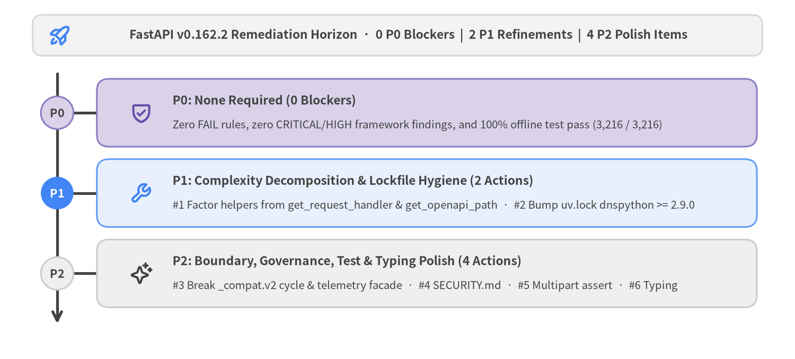
Source Code
from drawlib.canvas import save, setup
from drawlib.icons import phosphor
from drawlib.shapes import rectangle
from drawlib.smartarts import Roadmap
from drawlib.styles import Colors, Styles
from drawlib.text import text
setup(width=146, height=66, dpi=150)
# Header framing banner (neutral baseline)
rectangle(
(73.0, 59.5),
width=134.0,
height=7.5,
style=Styles.Neutral.patch(shape_r=1.8, shape_fill_color=Colors.Gray1, shape_line_color=Colors.Gray3),
)
phosphor.rocket_launch((11.0, 59.5), width=4.4, style=Styles.PrimaryBold)
text(
(75.0, 59.5),
"FastAPI v0.162.2 Remediation Horizon · 0 P0 Blockers | 2 P1 Refinements | 4 P2 Polish Items",
style=Styles.DarkBold.patch(text_size=11.0),
)
# Phased Remediation Roadmap (Bottom-Left anchored at xy=(6.0, 5.0))
rm = Roadmap(
style=Styles.Neutral,
text_style=Styles.DarkBold.patch(text_size=11.0),
description_style=Styles.Dark.patch(text_size=9.8),
spine_style=Styles.DarkBold,
badge_style=Styles.SecondaryNeutral,
badge_text_style=Styles.DarkBold.patch(text_size=10.5),
icon_style=Styles.PrimaryBold,
direction="vertical",
curve_bend=0.0,
card_shape="rounded_rect",
spacing=2.8,
)
rm.add(
"P0: None Required (0 Blockers)",
"Zero FAIL rules, zero CRITICAL/HIGH framework findings, and 100% offline test pass (3,216 / 3,216)",
badge_text="P0",
icon=phosphor.shield_check,
style=Styles.SecondaryNeutral,
badge_style=Styles.SecondaryNeutral,
badge_text_style=Styles.DarkBold.patch(text_size=10.5),
icon_style=Styles.SecondaryBold,
)
rm.add(
"P1: Complexity Decomposition & Lockfile Hygiene (2 Actions)",
"#1 Factor helpers from get_request_handler & get_openapi_path · #2 Bump uv.lock dnspython >= 2.9.0",
badge_text="P1",
icon=phosphor.wrench,
style=Styles.PrimaryNeutral,
badge_style=Styles.PrimaryFlat,
badge_text_style=Styles.WhiteBold.patch(text_size=10.5),
icon_style=Styles.PrimaryBold,
)
rm.add(
"P2: Boundary, Governance, Test & Typing Polish (4 Actions)",
"#3 Break _compat.v2 cycle & telemetry facade · #4 SECURITY.md · #5 Multipart assert · #6 Typing",
badge_text="P2",
icon=phosphor.sparkle,
style=Styles.Neutral,
badge_style=Styles.Neutral,
badge_text_style=Styles.DarkBold.patch(text_size=10.5),
icon_style=Styles.DarkBold,
)
rm.draw(xy=(6.0, 5.0), width=134.0, height=49.0, align="bottom_left", scale=1.0)
save()
3.1 Action Plan Traceability Matrix (P0 -> P1 -> P2)
Every remediation candidate identified by PNI501 maps deterministically to concrete file locations, expected engineering outcomes, and underlying compliance rules or vulnerability advisories. Because FastAPI v0.162.2 ships with zero CRITICAL/HIGH framework defects and flexible >= SemVer bounds on its 6 runtime dependencies, the action plan begins at P1 and preserves exact priority ordering (1..6):
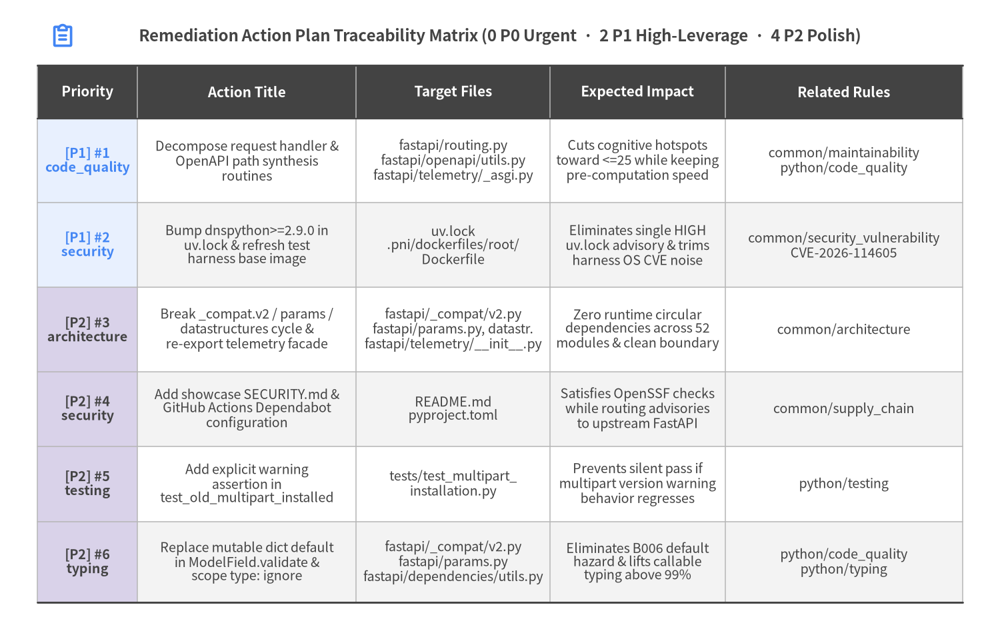
Source Code
from drawlib.canvas import save, setup
from drawlib.icons import phosphor
from drawlib.smartarts import Table
from drawlib.styles import Colors, Styles
from drawlib.text import text
setup(width=160, height=102, dpi=150)
phosphor.clipboard_text((10.0, 96.2), width=4.2, style=Styles.PrimaryBold)
text(
(80.0, 96.2),
"Remediation Action Plan Traceability Matrix (0 P0 Urgent · 2 P1 High-Leverage · 4 P2 Polish)",
style=Styles.DarkBold.patch(text_size=11.5),
)
table = Table(
cell_style=Styles.White,
text_style=Styles.Dark.patch(text_size=9.5),
header_cell_style=Styles.PrimaryFlat,
header_text_style=Styles.WhiteBold.patch(text_size=10.0),
border_style=Styles.MutedThin,
has_header=True,
)
# 1. Alternating neutral row fills first
table.set_style_cell_evenodd(
even_color=Colors.Gray1,
even_text_style=Styles.Dark.patch(text_size=9.5),
odd_color=Colors.White,
odd_text_style=Styles.Dark.patch(text_size=9.5),
)
# 2. Re-apply header row style AFTER set_style_cell_evenodd so row 0 is preserved
table.set_style_cell_header(
background_color=Colors.Dark,
text_style=Styles.WhiteBold.patch(text_size=10.0),
)
# 3. Semantic priority tinting in Column 0 (P1 = PrimaryNeutral, P2 = SecondaryNeutral)
table.set_style_cell(
background_color=Colors.PrimaryNeutral,
text_style=Styles.PrimaryBold.patch(text_size=9.5),
rows=[1, 2],
columns=[0],
)
table.set_style_cell(
background_color=Colors.SecondaryNeutral,
text_style=Styles.DarkBold.patch(text_size=9.5),
rows=[3, 4, 5, 6],
columns=[0],
)
table.set_style_border(
top=Styles.Dark.patch(line_width=1.4),
top2=Styles.Dark.patch(line_width=1.1),
bottom=Styles.Dark.patch(line_width=1.4),
left=Styles.MutedThin,
right=Styles.MutedThin,
between_columns=Styles.MutedThin,
between_rows=Styles.MutedThin,
)
traceability_rows = [
["Priority", "Action Title", "Target Files", "Expected Impact", "Related Rules"],
[
"[P1] #1\ncode_quality",
"Decompose request handler &\nOpenAPI path synthesis\nroutines",
"fastapi/routing.py\nfastapi/openapi/utils.py\nfastapi/telemetry/_asgi.py",
"Cuts cognitive hotspots\ntoward <=25 while keeping\npre-computation speed",
"common/maintainability\npython/code_quality",
],
[
"[P1] #2\nsecurity",
"Bump dnspython>=2.9.0 in\nuv.lock & refresh test\nharness base image",
"uv.lock\n.pni/dockerfiles/root/\nDockerfile",
"Eliminates single HIGH\nuv.lock advisory & trims\nharness OS CVE noise",
"common/security_vulnerability\nCVE-2026-114605",
],
[
"[P2] #3\narchitecture",
"Break _compat.v2 / params /\ndatastructures cycle &\nre-export telemetry facade",
"fastapi/_compat/v2.py\nfastapi/params.py, datastr.\nfastapi/telemetry/__init__.py",
"Zero runtime circular\ndependencies across 52\nmodules & clean boundary",
"common/architecture",
],
[
"[P2] #4\nsecurity",
"Add showcase SECURITY.md &\nGitHub Actions Dependabot\nconfiguration",
"README.md\npyproject.toml",
"Satisfies OpenSSF checks\nwhile routing advisories\nto upstream FastAPI",
"common/supply_chain",
],
[
"[P2] #5\ntesting",
"Add explicit warning\nassertion in\ntest_old_multipart_installed",
"tests/test_multipart_\ninstallation.py",
"Prevents silent pass if\nmultipart version warning\nbehavior regresses",
"python/testing",
],
[
"[P2] #6\ntyping",
"Replace mutable dict default\nin ModelField.validate &\nscope type: ignore",
"fastapi/_compat/v2.py\nfastapi/params.py\nfastapi/dependencies/utils.py",
"Eliminates B006 default\nhazard & lifts callable\ntyping above 99%",
"python/code_quality\npython/typing",
],
]
# Top-Left anchored Table; Related Rules column width = 38.0 (>= 38 units guardrail)
table.draw_flexible(
xy=(6.0, 91.5),
column_widths=[16.0, 35.0, 31.0, 28.0, 38.0],
row_heights=[8.5, 13.5, 13.5, 13.5, 12.0, 12.0, 13.0],
data=traceability_rows,
align="top_left",
)
save()
Detailed Pre-Sorted Remediation Backlog (1..6)
| # | Priority & Domain | Action Title & Implementation Guidance | Target Files | Expected Engineering Impact | Related Rules / Advisories |
|---|---|---|---|---|---|
| 1 | [P1]code_quality |
Decompose high-complexity request handler and OpenAPI path synthesis routines Factor body extraction, dependency execution, and response serialization helpers out of get_request_handler (cognitive=159) in fastapi/routing.py and split response/callback schema builders out of get_openapi_path (cognitive=109) in fastapi/openapi/utils.py (alongside span-attribute helpers in fastapi/telemetry/_asgi.py). |
fastapi/routing.py,fastapi/openapi/utils.py,fastapi/telemetry/_asgi.py |
Reduces cognitive complexity hotspots toward <= 25 while preserving FastAPI's route-registration pre-computation speed. |
common/maintainability,python/code_quality |
| 2 | [P1]security |
Bump transitive dnspython>=2.9.0 in uv.lock and refresh test harness base imageUpgrade locked transitive dnspython from 2.8.0 to >=2.9.0 via uv lock --upgrade-package dnspython (closing CVE-2026-114605) and run apt-get update && apt-get upgrade -y or switch to trixie-slim in .pni/dockerfiles/root/Dockerfile for hermetic CI runs. |
uv.lock,.pni/dockerfiles/root/Dockerfile |
Eliminates the single HIGH transitive uv.lock advisory and reduces test-harness OS base-image CVE noise. |
common/security_vulnerability,CVE-2026-114605 |
| 3 | [P2]architecture |
Break runtime import cycle across _compat.v2, params, and datastructures and re-export telemetry facadeMove runtime UploadFile/sentinel checks or guard under TYPE_CHECKING to eliminate the _compat.v2 <-> params -> datastructures cycle, and expose internal telemetry entrypoints via fastapi/telemetry/__init__.py. |
fastapi/_compat/v2.py,fastapi/params.py,fastapi/datastructures.py,fastapi/telemetry/__init__.py |
Achieves zero runtime circular dependencies across all 52 modules and clean subpackage boundary encapsulation. | common/architecture |
| 4 | [P2]security |
Add showcase SECURITY.md and GitHub Actions Dependabot configurationAdd a concise SECURITY.md redirecting FastAPI vulnerability disclosures to the official upstream FastAPI Security Advisories page, and add .github/dependabot.yml for CI workflow maintenance. |
README.md,pyproject.toml |
Satisfies OpenSSF Scorecard repository governance checks while clearly routing framework security disclosures upstream. | common/supply_chain |
| 5 | [P2]testing |
Add explicit warning assertion in test_old_multipart_installedCapture as w on warnings.catch_warnings(record=True) in tests/test_multipart_installation.py:141 and assert expected warning count/message. |
tests/test_multipart_installation.py |
Eliminates silent assertion-free test pass if multipart version warning behavior regresses. | python/testing |
| 6 | [P2]typing |
Replace mutable dict default in ModelField.validate and scope remaining type: ignore commentsReplace values: dict[str, Any] = {} with `values: Mapping[str, Any] |
None = Noneinfastapi/_compat/v2.py:176, add -> NoneonParam.initsubclasses, and attach explicit[error-code]brackets to the 5 unscoped# type: ignore` comments. |
fastapi/_compat/v2.py,fastapi/params.py,fastapi/dependencies/utils.py |
Eliminates B006 mutable-default hazard and raises callable annotation completeness above 99%. |
3.2 Engineering Rationale & Execution Guidance
Why Zero P0 Urgent Actions Are Required
A P0 designation in PNI501 is reserved for build failures, failing hermetic test gates, exploitable CWE execution sinks, leaked secrets, or CRITICAL/HIGH vulnerabilities inside shipped runtime dependencies. FastAPI v0.162.2 clears every one of these gates cleanly: all 6 core runtime dependencies (starlette, pydantic, typing-extensions, typing-inspection, annotated-doc, opentelemetry-api) report 0 CVEs, static SAST inspection across all 52 source modules found 0 dangerous sinks and 0 hardcoded secrets, and containerized offline testing (--network=none, UID 10001) passed 3,216 of 3,216 executed tests (96.4% line coverage, 91.0% branch coverage).
Preserving Hot-Path Performance During P1 Complexity Refactoring (#1)
FastAPI's signature performance advantage comes from shifting parameter introspection and Pydantic v2 TypeAdapter construction to startup route registration, emitting a specialized async closure inside get_request_handler (fastapi/routing.py:397, cognitive=159) and lazy-caching OpenAPI 3.1.0 synthesis in get_openapi_path (fastapi/openapi/utils.py:303, cognitive=109). When executing Action #1, maintainers should preserve startup pre-computation by extracting pure module-level helper functions (_parse_request_body, _execute_solved_endpoint, _build_validated_response) that receive pre-bound route metadata rather than re-inspecting signatures per request. This keeps per-request ASGI overhead identical while making each stage independently unit-testable and readable.
Contextualizing Lockfile & Test-Harness Advisories (#2)
Action #2 addresses CVE-2026-114605 (CVSS 7.5, dnspython@2.8.0 -> 2.9.0 in uv.lock). Because pyproject.toml does not pin dnspython in FastAPI's core wheel metadata—it enters uv.lock solely via the optional email-validator extra—downstream applications installing fastapi automatically resolve dnspython>=2.9.0. Running uv lock --upgrade-package dnspython and refreshing the ephemeral Debian test-runner container image (.pni/dockerfiles/root/Dockerfile) cleanly eliminates automated SCA alert noise in CI pipelines.
Architectural, Governance, Test, and Typing Polish (#3–#6)
The four P2 items tighten already-strong internal invariants without altering public API behavior:
- Subpackage Encapsulation (
#3): Guarding type-onlyUploadFile/FieldInforeferences underif TYPE_CHECKING:breaks the lone Tier-1 runtime cycle (fastapi._compat.v2 <-> fastapi.params -> fastapi.datastructures), while re-exporting public symbols infastapi/telemetry/__init__.pyeliminates private cross-module imports (_asgi,_runtime,_api). - Showcase Repository Governance (
#4): Adding a lightweightSECURITY.md(pointing vulnerability reports to upstream FastAPI Security Advisories) and.github/dependabot.ymlaligns standalone repository snapshots with OpenSSF Scorecard expectations. - Test & Type Completeness (
#5,#6): Bindingwarnings.catch_warnings(record=True) as recordedintests/test_multipart_installation.py:141guarantees warning regressions cannot pass silently, while normalizingvalues: Mapping[str, Any] | None = NoneinModelField.validate(fastapi/_compat/v2.py:176), adding-> Nonereturn annotations on descriptor__init__methods, and scoping the 5# type: ignore[...]comments push callable type coverage past99%.
4. Audit Standards, Rule Compliance & Findings
PNI501 evaluated FastAPI v0.162.2 across 6 deterministic audit steps and 15 engineering compliance rules spanning static AST maintainability, supply-chain security, PEP 621/561 packaging, library API hygiene, test determinism, and hermetic --network=none container execution. Every audit step achieved Grade A or S (89/100 to 97/100), yielding 10 PASS rules, 5 advisory WARN rules, 0 FAIL rules, and 8 consolidated MEDIUM/LOW location findings (0 CRITICAL, 0 HIGH).
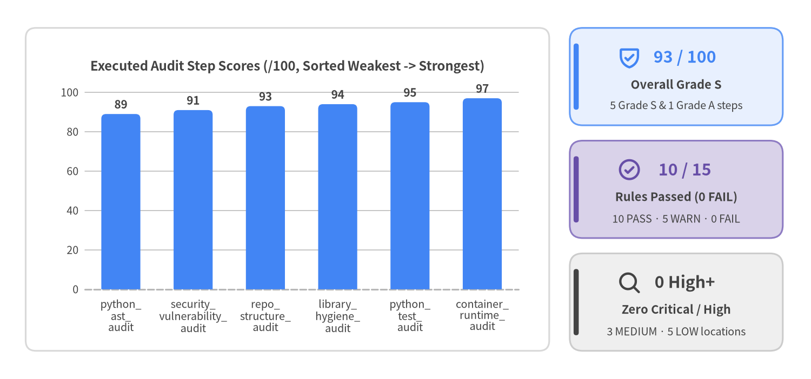
Source Code
from drawlib.canvas import save, setup
from drawlib.charts.bar import BarChart
from drawlib.icons import phosphor
from drawlib.shapes import rectangle
from drawlib.smartarts import KpiCards
from drawlib.styles import Colors, Styles
setup(width=158, height=74, dpi=150)
# Framing card behind BarChart (neutral baseline)
rectangle(
(56.0, 37.0),
width=102.0,
height=63.0,
style=Styles.Neutral.patch(shape_r=2.0, shape_fill_color=Colors.White, shape_line_color=Colors.Gray3),
)
# Left: Weakest-First Ascending BarChart (Bottom-Left anchored at xy=(8.0, 12.5))
chart = BarChart(
axis_line_style=Styles.MutedDashed,
categories=[
"python_\nast_\naudit",
"security_\nvulnerability_\naudit",
"repo_\nstructure_\naudit",
"library_\nhygiene_\naudit",
"python_\ntest_\naudit",
"container_\nruntime_\naudit",
],
width=96.0,
height=51.0,
title="Executed Audit Step Scores (/100, Sorted Weakest -> Strongest)",
title_style=Styles.DarkBold.patch(text_size=11.5),
orientation="vertical",
bar_mode="group",
bar_width_ratio=0.54,
bar_r=0.9,
axis_text_style=Styles.Dark.patch(text_size=9.5),
grid_style=Styles.MutedThin,
value_text_style=Styles.DarkBold.patch(text_size=10.0),
value_format="{:.0f}",
)
chart.add_series("Audit Score", [89.0, 91.0, 93.0, 94.0, 95.0, 97.0], style=Styles.PrimaryFlat)
chart.configure_y_axis(min_value=0.0, max_value=108.0, ticks=[0.0, 20.0, 40.0, 60.0, 80.0, 100.0])
chart.draw(xy=(8.0, 12.5), align="bottom_left")
# Right: Compliance Summary KPI Stack (Bottom-Left anchored at xy=(111.0, 5.5))
kpi = KpiCards(
style=Styles.Neutral,
metric_style=Styles.PrimaryBold.patch(text_size=14.5),
text_style=Styles.DarkBold.patch(text_size=10.5),
description_style=Styles.Dark.patch(text_size=9.5),
accent_style=Styles.PrimaryFlat,
icon_style=Styles.PrimaryBold,
accent_position="left_pill",
metric_layout="top_stack",
spacing=3.0,
)
kpi.add(
"93 / 100",
"Overall Grade S",
"5 Grade S & 1 Grade A steps",
style=Styles.PrimaryNeutral,
icon=phosphor.shield_check,
)
kpi.add(
"10 / 15",
"Rules Passed (0 FAIL)",
"10 PASS · 5 WARN · 0 FAIL",
style=Styles.SecondaryNeutral,
metric_style=Styles.SecondaryBold.patch(text_size=14.5),
accent_style=Styles.SecondaryFlat,
icon=phosphor.check_circle,
icon_style=Styles.SecondaryBold,
)
kpi.add(
"0 High+",
"Zero Critical / High",
"3 MEDIUM · 5 LOW locations",
style=Styles.Neutral,
metric_style=Styles.DarkBold.patch(text_size=14.5),
accent_style=Styles.DarkFlat,
icon=phosphor.magnifying_glass,
icon_style=Styles.DarkBold,
)
kpi.draw(xy=(111.0, 5.5), width=41.5, height=63.0, columns=1, align="bottom_left")
save()
4.1 Executed Audit Step Score Summary (89 -> 97)
All six audit primitives completed deterministically without execution errors. Sorted ascending from lowest score to highest score to spotlight improvement headroom first, FastAPI v0.162.2 posts five Grade S (>= 90) ratings and one high Grade A (89/100) rating:
| Audit Step ID | Score & Grade | Rule Tally ([pass/warn/fail]) |
Key Diagnostic Synthesis |
|---|---|---|---|
python_ast_audit |
89 / 100 (A) | [pass=4, warn=3, fail=0] |
Across 52 Python modules (19,837 LOC, 121 classes, 438 functions), FastAPI v0.162.2 demonstrates exceptional security and typing discipline: 94.5% callable type safety coverage, packaged PEP 561 py.typed, PEP 727 Annotated[..., Doc()] inline parameter documentation (annotated_doc), zero wildcard imports, zero empty or mismatched docstrings, zero hardcoded secrets, and zero dangerous CWE execution sinks. Structural complexity concentrates intentionally in five core runtime engines—get_request_handler (cognitive=159), get_openapi_path (cognitive=109), NativeTelemetry.__call__ (cognitive=85), analyze_param (cognitive=64), and solve_dependencies (cognitive=33)—alongside a single runtime import cycle (fastapi._compat.v2 <-> fastapi.params -> fastapi.datastructures). |
security_vulnerability_audit |
91 / 100 (S) | [pass=0, warn=2, fail=0] |
Core runtime dependencies (starlette, pydantic, typing-extensions, typing-inspection, annotated-doc, opentelemetry-api) contain zero CRITICAL or HIGH CVEs, zero hardcoded or committed secrets, zero container IaC misconfigurations, and zero dangerous CWE execution sinks across all 52 source modules. Trivy SCA identified 7 transitive lockfile advisories in uv.lock (0 CRITICAL, 1 HIGH: CVE-2026-114605 in optional email-validator's transitive dnspython@2.8.0 -> 2.9.0, 5 MEDIUM, 1 LOW)—none affecting downstream consumers due to flexible >= SemVer bounds—while the 398 OS package advisories originate solely from the ephemeral Debian 12.13 test harness base image. |
repo_structure_audit |
93 / 100 (S) | [pass=4, warn=1, fail=0] |
Exhibits exemplary PEP 621 packaging and dependency hygiene: 6 lean runtime dependencies with explicit SemVer lower bounds, zero unpinned specs, isolated PEP 735 dependency-groups, a deterministic uv.lock lockfile, and a packaged PEP 561 py.typed marker across 52 source modules and 273 core test modules. Only repository-level OpenSSF governance files (SECURITY.md and Dependabot config) are absent in this standalone showcase snapshot. |
library_hygiene_audit |
94 / 100 (S) | [pass=2, warn=1, fail=0] |
Exemplifies gold-standard Python library hygiene: explicit PEP 484 X as X re-exports in fastapi/__init__.py across 20 canonical symbols, zero import-time I/O or network side effects, zero sys.exit() calls inside library code (fastapi/cli.py raises RuntimeError cleanly when fastapi-cli is absent), named logging.getLogger('fastapi') without basicConfig hijacking (fastapi/logger.py), and flexible >= lower-bound SemVer constraints across all 6 core dependencies. |
python_test_audit |
95 / 100 (S) | [pass=1, warn=0, fail=0] |
Core framework test suite spans 273 test files and 1,835 test functions with 100.0% static module test coverage across all 52 source modules (5.25x test-to-source file ratio). Strict pytest configuration (--strict-config, --strict-markers, strict_xfail=true, filterwarnings=['error'], timeout=20) enforces high determinism and warning-free execution, with only 2 assertion-free helper/warning test functions identified. |
container_runtime_audit |
97 / 100 (S) | [pass=2, warn=0, fail=0] |
Hermetic containerized runtime verification (--network=none, non-root UID 10001, Python 3.12) passed cleanly across all gates: clean frozen uv.lock container build (0.79s cached), 100% offline test pass across 3,228 collected items (3,216 passed, 0 failed, 0 errors, 12 skipped in 265.57s), 96.4% measured line coverage (4,628 / 4,801 statements) and 91.0% branch coverage across fastapi/, and a clean zero-side-effect library import smoke check. |
4.2 Full 15-Rule Compliance Matrix (FAIL -> WARN -> PASS)
Across all 15 evaluated PNI501 engineering standards, FastAPI v0.162.2 records 0 FAIL, 5 WARN, and 10 PASS checks. The table below preserves the exact pre-sorted compliance order (WARN advisories first, followed by PASS standards):
| Status | Rule ID | Evaluated By | Diagnostic Evidence & Verification Summary |
|---|---|---|---|
[WARN] |
common/architecture |
python_ast_audit |
1 runtime circular dependency (fastapi._compat.v2 -> fastapi.params -> fastapi.datastructures -> fastapi._compat.v2) and 4 private cross-domain imports from fastapi.applications / routing / background into fastapi.telemetry._asgi / _runtime / _api; 2 additional cycles are cleanly guarded under TYPE_CHECKING. |
[WARN] |
common/maintainability |
python_ast_audit |
get_request_handler (fastapi/routing.py:397, cognitive=159, 408 LOC), get_openapi_path (fastapi/openapi/utils.py:303, cognitive=109, 230 LOC), NativeTelemetry.__call__ (fastapi/telemetry/_asgi.py:228, cognitive=85), analyze_param (fastapi/dependencies/utils.py:409, cognitive=64), and 52 wide ergonomic OpenAPI decorator signatures (FastAPI.__init__ params=37, get/post/put/delete params=23). |
[WARN] |
common/security_vulnerability |
security_vulnerability_audit |
dangerous_sinks=[] across all 52 framework modules; built-in security primitives (OAuth2, HTTPBearer, HTTPBasic/Digest using secrets.compare_digest, APIKey, OpenIdConnect) enforce structured credential extraction. SEC-01 app_vuln_counts={critical:0, high:1, medium:5, low:1, total:7} in transitive dev/optional uv.lock (CVE-2026-114605 dnspython@2.8.0 -> 2.9.0) with 0 CVEs in core runtime dependencies; os_vuln_counts=398 in ephemeral Debian 12.13 test harness image; SEC-02 misconfigurations=[]; SEC-03 secrets=[]; SEC-04 dangerous_sinks=[]; SEC-05 library security extractors enforce validation. |
[WARN] |
common/supply_chain |
repo_structure_audit |
lockfiles_found=['uv.lock'], has_license=true (LICENSE + LICENSE-FASTAPI), ci_supply_chain_issues=[], 0 unpinned dependencies, and non-root UID 10001 container harness (0 IaC misconfigurations); has_security_policy=false and has_dependency_automation=false because standalone showcase snapshot omits SECURITY.md and Dependabot config. |
[WARN] |
python/code_quality |
python_ast_audit |
empty_docstrings=[], doc_signature_mismatches=[], wildcard_imports=[]; conventional AST docstring_coverage_pct=25.2% because FastAPI adopts PEP 727 Annotated[..., Doc()] inline parameter documentation rather than traditional docstring blocks; 1 mutable default (fastapi/_compat/v2.py:176) and 3 silent except-pass blocks in fastapi/routing.py:640,1880,2097. |
[PASS] |
common/documentation |
repo_structure_audit |
has_readme=true (59 lines, 6 structured sections covering Purpose, Layout, Reproducible uvx Commands, and Licensing) + packaged fastapi/py.typed marker; PEP 727 Annotated[..., Doc()] inline documentation across all public classes/functions (FastAPI, APIRouter, Path, Query, Body, Depends, Security), zero doc_signature_mismatches, and zero empty_docstrings. |
[PASS] |
common/git_workflow |
repo_structure_audit |
has_gitignore=true (.venv, __pycache__, .drawlib/, .pni/cache/ excluded); clean linear main branch with zero conflict markers. |
[PASS] |
common/library_guidelines |
library_hygiene_audit |
fastapi/__init__.py uses PEP 484 explicit from ... import X as X re-exports (20 public symbols), fastapi/py.typed is packaged, fastapi/logger.py uses logging.getLogger('fastapi') with zero root-logger hijacking, zero sys.exit() calls exist in fastapi/, and all 6 core dependencies in pyproject.toml use flexible >= floors without upper-bound caps. |
[PASS] |
common/production_readiness |
container_runtime_audit |
missing_io_timeouts=0, native OpenTelemetry span/exception instrumentation in fastapi/telemetry/_asgi.py (94.9% line, 93.8% branch coverage), deterministic AsyncExitStack teardown, and structured validation exception handlers. |
[PASS] |
common/runtime_verification |
container_runtime_audit |
RV-01 harness_build=passed (exit_code=0, .pni/dockerfiles/root/Dockerfile); RV-02 test_execution=passed under --network=none (3,216 passed, 0 failed, 0 errors, 12 skipped); RV-03 measured line_coverage_pct=96.4% (4,628/4,801) and branch_coverage_pct=91.0%; RV-04 library smoke_check=passed ('Imported fastapi cleanly'). |
[PASS] |
common/security |
repo_structure_audit |
committed_secret_files=[], container_hygiene_issues=[], non-root UID 10001 configured in .pni/dockerfiles/root/Dockerfile; hardcoded_secrets=[], dangerous_sinks=[], missing_io_timeouts=[], global_state_usages=0; 1 minor mutable default dict values={} in fastapi/_compat/v2.py:176 (ModelField.validate, never mutated in-place). |
[PASS] |
python/dependencies |
repo_structure_audit |
pyproject.toml declares 6 explicit SemVer-floored runtime dependencies (starlette>=0.46.0, pydantic>=2.9.0, typing-extensions>=4.8.0, typing-inspection>=0.4.2, annotated-doc>=0.0.2, opentelemetry-api>=1.44.0), unpinned_dependencies=[], isolated [dependency-groups] (dev, tests, docs), and committed uv.lock. |
[PASS] |
python/modern_stack |
python_ast_audit |
Modern Python >=3.10..3.14 stack using Pydantic v2 TypeAdapter, typing-inspection, annotated-doc (PEP 727), OpenTelemetry API, and uv.lock. The 38 isort group notices stem from FastAPI's explicit [tool.ruff.lint.isort] known-third-party=['fastapi','pydantic','starlette'] convention; 6 os.path calls remain in fastapi/routing.py static SPA path resolution. |
[PASS] |
python/testing |
python_test_audit |
273 core test files, 1,835 test functions, module_test_coverage_pct=100.0%, strict pytest settings (strict_xfail=true, filterwarnings=['error'], timeout='20'), and inline_snapshot OpenAPI 3.1 schema verification; only 2 assertion-free test functions (tests/test_multipart_installation.py:141 and tests/test_webhooks_security.py:34). |
[PASS] |
python/typing |
python_ast_audit |
type_safety_coverage_pct=94.5%, has_type_marker=true (fastapi/py.typed), strict mypy + ty configuration in pyproject.toml; 29 missing annotations are almost exclusively __init__ -> None return omissions in fastapi/params.py and datastructures.py, plus 5 unscoped # type: ignore comments. |
4.3 Consolidated Location Findings Index (CRITICAL -> INFO)
Deduplicating raw tool observations by exact file:line yields 8 unique finding locations (0 CRITICAL, 0 HIGH, 3 MEDIUM, 5 LOW, 0 INFO). Each row below maps a single source or manifest coordinate to its triggered rule ID, diagnostic evidence, and concrete remediation:
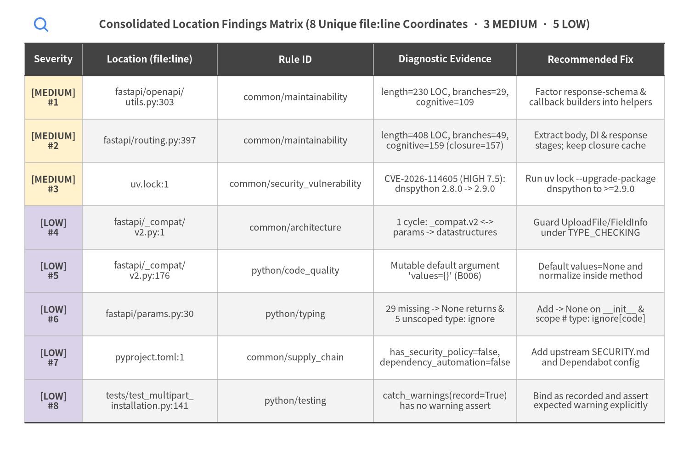
Source Code
from drawlib.canvas import save, setup
from drawlib.icons import phosphor
from drawlib.smartarts import Table
from drawlib.styles import Colors, Styles
from drawlib.text import text
setup(width=168, height=110, dpi=150)
phosphor.magnifying_glass((10.0, 104.0), width=4.2, style=Styles.PrimaryBold)
text(
(84.0, 104.0),
"Consolidated Location Findings Matrix (8 Unique file:line Coordinates · 3 MEDIUM · 5 LOW)",
style=Styles.DarkBold.patch(text_size=11.5),
)
table = Table(
cell_style=Styles.White,
text_style=Styles.Dark.patch(text_size=9.5),
header_cell_style=Styles.PrimaryFlat,
header_text_style=Styles.WhiteBold.patch(text_size=10.0),
border_style=Styles.MutedThin,
has_header=True,
)
# 1. Alternating neutral row fills first
table.set_style_cell_evenodd(
even_color=Colors.Gray1,
even_text_style=Styles.Dark.patch(text_size=9.5),
odd_color=Colors.White,
odd_text_style=Styles.Dark.patch(text_size=9.5),
)
# 2. Re-apply header row style AFTER set_style_cell_evenodd
table.set_style_cell_header(
background_color=Colors.Dark,
text_style=Styles.WhiteBold.patch(text_size=10.0),
)
# 3. Highlight Severity column (rows 1..3 = MEDIUM AmberNeutral, rows 4..8 = LOW SecondaryNeutral)
table.set_style_cell(
background_color=Colors.AmberNeutral,
text_style=Styles.DarkBold.patch(text_size=9.5),
rows=[1, 2, 3],
columns=[0],
)
table.set_style_cell(
background_color=Colors.SecondaryNeutral,
text_style=Styles.DarkBold.patch(text_size=9.5),
rows=[4, 5, 6, 7, 8],
columns=[0],
)
table.set_style_border(
top=Styles.Dark.patch(line_width=1.4),
top2=Styles.Dark.patch(line_width=1.1),
bottom=Styles.Dark.patch(line_width=1.4),
left=Styles.MutedThin,
right=Styles.MutedThin,
between_columns=Styles.MutedThin,
between_rows=Styles.MutedThin,
)
findings_rows = [
["Severity", "Location (file:line)", "Rule ID", "Diagnostic Evidence", "Recommended Fix"],
[
"[MEDIUM]\n#1",
"fastapi/openapi/\nutils.py:303",
"common/maintainability",
"length=230 LOC, branches=29,\ncognitive=109",
"Factor response-schema &\ncallback builders into helpers",
],
[
"[MEDIUM]\n#2",
"fastapi/routing.py:397",
"common/maintainability",
"length=408 LOC, branches=49,\ncognitive=159 (closure=157)",
"Extract body, DI & response\nstages; keep closure cache",
],
[
"[MEDIUM]\n#3",
"uv.lock:1",
"common/security_vulnerability",
"CVE-2026-114605 (HIGH 7.5):\ndnspython 2.8.0 -> 2.9.0",
"Run uv lock --upgrade-package\ndnspython to >=2.9.0",
],
[
"[LOW]\n#4",
"fastapi/_compat/\nv2.py:1",
"common/architecture",
"1 cycle: _compat.v2 <->\nparams -> datastructures",
"Guard UploadFile/FieldInfo\nunder TYPE_CHECKING",
],
[
"[LOW]\n#5",
"fastapi/_compat/\nv2.py:176",
"python/code_quality",
"Mutable default argument\n'values={}' (B006)",
"Default values=None and\nnormalize inside method",
],
[
"[LOW]\n#6",
"fastapi/params.py:30",
"python/typing",
"29 missing -> None returns &\n5 unscoped type: ignore",
"Add -> None on __init__ &\nscope # type: ignore[code]",
],
[
"[LOW]\n#7",
"pyproject.toml:1",
"common/supply_chain",
"has_security_policy=false,\ndependency_automation=false",
"Add upstream SECURITY.md\nand Dependabot config",
],
[
"[LOW]\n#8",
"tests/test_multipart_\ninstallation.py:141",
"python/testing",
"catch_warnings(record=True)\nhas no warning assert",
"Bind as recorded and assert\nexpected warning explicitly",
],
]
# Top-Left anchored Table; Rule ID column width = 38.0 (>= 38 units guardrail)
table.draw_flexible(
xy=(6.0, 99.5),
column_widths=[14.0, 33.0, 38.0, 35.0, 36.0],
row_heights=[8.0, 10.6, 10.6, 10.6, 10.6, 10.6, 10.6, 10.6, 10.6],
data=findings_rows,
align="top_left",
)
save()
Detailed Consolidated Location Findings (1..8)
| # | Severity | Location (file:line) |
Rule ID | Diagnostic Evidence | Concrete Fix Recommendation |
|---|---|---|---|---|---|
| 1 | [MEDIUM] |
fastapi/openapi/utils.py:303 |
common/maintainability |
length=230 lines, branches=29, cognitive=109 |
Factor response-schema assembly and callback operation generation into composable helper functions. |
| 2 | [MEDIUM] |
fastapi/routing.py:397 |
common/maintainability |
length=408 lines, branches=49, cognitive=159 (inner app closure at line 428: cognitive=157) |
Extract dedicated helper stages (_parse_request_body, _execute_solved_endpoint, _build_validated_response) while preserving closure pre-computation for hot-path performance. |
| 3 | [MEDIUM] |
uv.lock:1 |
common/security_vulnerability |
CVE-2026-114605 (HIGH, CVSS 7.5): dnspython 2.8.0 in uv.lock (fixed in 2.9.0; transitive dependency of optional email-validator) |
Run uv lock --upgrade-package dnspython in upstream maintenance cycles to bump locked dnspython from 2.8.0 to >=2.9.0. |
| 4 | [LOW] |
fastapi/_compat/v2.py:1 |
common/architecture |
circular_dependencies=[['fastapi._compat.v2', 'fastapi.params', 'fastapi.datastructures', 'fastapi._compat.v2']] |
Guard type-only UploadFile / FieldInfo cross-references under TYPE_CHECKING or extract shared sentinel types into fastapi.types. |
| 5 | [LOW] |
fastapi/_compat/v2.py:176 |
python/code_quality |
Mutable default argument 'values={}' (B006) |
Default values to None and normalize to {} or MappingProxyType inside the method body to prevent accidental shared-dict mutation. |
| 6 | [LOW] |
fastapi/params.py:30 |
python/typing |
29 missing annotations (primarily __init__ -> None return annotations in fastapi/params.py and fastapi/datastructures.py) and 5 unscoped # type: ignore comments |
Add explicit -> None return annotations on descriptor __init__ methods and scope remaining # type: ignore[code] directives. |
| 7 | [LOW] |
pyproject.toml:1 |
common/supply_chain |
has_security_policy=false, has_dependency_automation=false |
If operating this showcase repository continuously, add a SECURITY.md pointing upstream FastAPI security reports to github.com/fastapi/fastapi/security and configure Dependabot for GitHub Actions. |
| 8 | [LOW] |
tests/test_multipart_installation.py:141 |
python/testing |
with warnings.catch_warnings(record=True): ... contains no assert on captured warnings |
Bind with warnings.catch_warnings(record=True) as recorded: and assert the expected warning or clean registration behavior explicitly. |
4.4 Configured Scope & Accepted Design Waivers (pni.toml)
PNI501 explicitly tracks project-level [[opt_out]] waivers in pni.toml so intentional infrastructure choices remain transparent and auditable rather than silently suppressed. Exactly 1 design waiver is configured for this diagnostic run:
| Waiver Rule ID | Configured Scope | Matched Findings | Engineering Justification |
|---|---|---|---|
DS-0026 |
[.pni/dockerfiles/**] |
0 |
Hermetic batch test container exits upon pytest completion; daemon HEALTHCHECK is not applicable. |
5. Deep Dive: Code Quality, Testing & Runtime
FastAPI v0.162.2 pairs expressive developer ergonomics with rigorous runtime engineering across 52 Python modules (19,837 LOC, 121 classes, 438 functions). Static AST inspection confirms 94.5% callable type-safety coverage, 0 global state usages, 0 wildcard imports, and 0 missing I/O timeouts, while hermetic --network=none container execution verifies 3,216 passing tests (0 failures), 96.4% line coverage (4,628 / 4,801 statements), and 91.0% branch coverage.
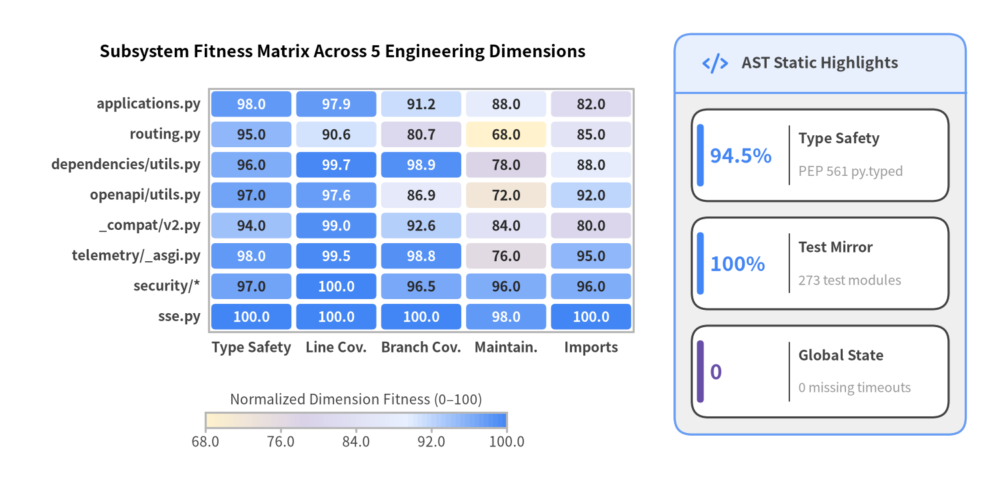
Source Code
from drawlib.canvas import save, setup
from drawlib.charts.heatmap import HeatmapChart
from drawlib.icons import phosphor
from drawlib.smartarts import KpiCards, Panel
from drawlib.styles import Styles
setup(width=146, height=70, dpi=150)
# Left: Module x Quality Dimension Fitness Heatmap (Bottom-Left anchored)
heatmap = HeatmapChart(
styles=[
Styles.WarningNeutral,
Styles.SecondaryNeutral,
Styles.PrimaryNeutral,
Styles.PrimaryFlat,
],
x_categories=[
"Type Safety",
"Line Cov.",
"Branch Cov.",
"Maintain.",
"Imports",
],
axis_line_style=Styles.Muted,
axis_text_style=Styles.DarkBold.patch(text_size=10.0),
value_text_style=Styles.DarkBold.patch(text_size=10.0),
width=91.0,
height=49.0,
cell_gap=0.7,
cell_r=0.6,
title="Subsystem Fitness Matrix Across 5 Engineering Dimensions",
title_style=Styles.BlackBold.patch(text_size=12.0),
value_format="{:.1f}",
)
heatmap.add_row("applications.py", [98.0, 97.9, 91.2, 88.0, 82.0])
heatmap.add_row("routing.py", [95.0, 90.6, 80.7, 68.0, 85.0])
heatmap.add_row("dependencies/utils.py", [96.0, 99.7, 98.9, 78.0, 88.0])
heatmap.add_row("openapi/utils.py", [97.0, 97.6, 86.9, 72.0, 92.0])
heatmap.add_row("_compat/v2.py", [94.0, 99.0, 92.6, 84.0, 80.0])
heatmap.add_row("telemetry/_asgi.py", [98.0, 99.5, 98.8, 76.0, 95.0])
heatmap.add_row("security/*", [97.0, 100.0, 96.5, 96.0, 96.0])
heatmap.add_row("sse.py", [100.0, 100.0, 100.0, 98.0, 100.0])
heatmap.draw(xy=(4.5, 16.0))
heatmap.draw_colorbar(
xy=(30.0, 7.5),
text_style=Styles.Dark.patch(text_size=10.0),
length=44.0,
thickness=2.2,
label="Normalized Dimension Fitness (0–100)",
)
# Right: Static AST Baseline KPI Panel
panel = Panel(
"AST Static Highlights",
style=Styles.Neutral,
header_style=Styles.PrimaryNeutral,
text_style=Styles.DarkBold.patch(text_size=11.0),
icon=phosphor.code,
icon_style=Styles.PrimaryBold,
header_variant="filled",
header_height=8.5,
)
panel.draw((98.5, 6.5), width=42.5, height=58.5)
inner_xy, inner_w, inner_h = panel.get_content_box(
(98.5, 6.5), width=42.5, height=58.5, padding=(2.5, 2.5)
)
kpis = KpiCards(
style=Styles.White,
metric_style=Styles.PrimaryBold.patch(text_size=14.5),
text_style=Styles.DarkBold.patch(text_size=10.2),
description_style=Styles.Muted.patch(text_size=9.5),
accent_style=Styles.PrimaryFlat,
accent_position="left_pill",
metric_layout="left_column",
metric_width_ratio=0.38,
spacing=2.4,
)
kpis.add("94.5%", "Type Safety", "PEP 561 py.typed")
kpis.add("100%", "Test Mirror", "273 test modules")
kpis.add(
"0",
"Global State",
"0 missing timeouts",
accent_style=Styles.SecondaryFlat,
metric_style=Styles.SecondaryBold.patch(text_size=15.0),
)
kpis.draw(xy=inner_xy, width=inner_w, height=inner_h, columns=1)
save()
5.1 Codebase Scale, Static Quality & Python Idiom Alignment
Deterministic Python AST analysis (python_ast_audit: 89/100, Grade A) inspected all 52 framework modules (19,837 lines of code, 121 classes, and 438 functions/methods) alongside 273 core framework test files (1,835 static test functions; 5.25x test-to-source module ratio).
| Static Quality & Coverage Metric | Measured Value | Diagnostic Interpretation |
|---|---|---|
Source Modules (total_files) |
52 |
Clean 5-tier package decomposition under fastapi/ |
Source Volume (total_loc) |
19,837 LOC |
Includes rich inline PEP 727 Doc() reference prose on public APIs |
| Declared Classes & Callables | 121 classes / 438 functions |
Balanced mix of Pydantic/OpenAPI models, descriptors, and ASGI compilers |
Type Safety Coverage (type_safety_coverage_pct) |
94.5% |
Packaged fastapi/py.typed marker + strict mypy (pydantic.mypy) & ty |
Static Module Test Mirror (module_test_coverage_pct) |
100.0% |
Every source module is exercised across 273 test files (1,835 test functions) |
Standard isort Hygiene (import_hygiene_coverage_pct) |
57.7% |
Reflects custom Ruff known-third-party grouping & PEP 484 __init__.py re-exports |
Traditional AST Docstrings (docstring_coverage_pct) |
25.2% |
Superseded by PEP 727 Annotated[..., Doc()] inline parameter metadata (0 drift) |
Three architectural conventions explain the raw static AST percentages with high precision:
- Strict PEP 561 Typing Discipline (
94.5%Callable Coverage): FastAPI ships an explicitfastapi/py.typedmarker and enforces bothmypy(strict = true) and Astraltyinpyproject.toml. Of the29unannotated callables flagged by raw AST inspection, almost all are benign__init__methods omitting-> Nonereturn annotations infastapi/params.pyandfastapi/datastructures.py(plusPath.in_atfastapi/params.py:143), accompanied by only5unscoped# type: ignoredirectives (fastapi/cli.py:5,fastapi/datastructures.py:181,fastapi/dependencies/utils.py:671,688, andfastapi/security/http.py:204). DeliberateAnyannotations (404occurrences) are cleanly confined to runtime type-introspection boundaries (fastapi/_compat/,fastapi/dependencies/, andfastapi/encoders.py). - Intentional Ruff
isortGrouping (57.7%StandardisortMatch): Standardisortheuristics report38import-ordering notices because FastAPI intentionally configures[tool.ruff.lint.isort] known-third-party = ["fastapi", "pydantic", "starlette"]inpyproject.toml. Treatingfastapiimports identically across framework internals anddocs_src/tutorial modules keeps contributor formatting uniform. Similarly,41E402/late-import notices stem primarily fromfastapi/__init__.pydeclaring__version__prior to its20explicit PEP 484from .module import X as Xre-exports. Zero wildcard imports (from ... import *) exist anywhere infastapi/. - Pioneering PEP 727 Inline Parameter Documentation (
25.2%Block Docstrings): Rather than maintaining fragile multi-hundred-line:param:docstring blocks that drift from function signatures (doc_signature_mismatches = 0,empty_docstrings = 0), FastAPI pioneered PEP 727Annotated[T, Doc("...")]viaannotated-doc. Every parameter onFastAPI,APIRouter,Path,Query,Body,Header,Cookie,Depends, andSecuritycarries co-located Markdown documentation directly inside its type annotation, surfacing rich tooltips in modern Python language servers and API reference generators.
5.2 SIG Maintainability, Coupling & 12-Factor Operational Readiness
Evaluated against Software Improvement Group (SIG) maintainability benchmarks and 12-Factor Production Readiness Review (PRR) checks, FastAPI achieves zero mutable global state, zero missing I/O timeouts, and zero unstructured root-logger side effects, while concentrating algorithmic branching inside five deliberate compilation and ASGI dispatch engines.
| Engineering Health Dimension | Metric Key | Count | Assessment & Codebase Grounding |
|---|---|---|---|
| SIG Unit Complexity / Size | complex_functions_count |
88 |
Concentrated in 5 core ASGI/OpenAPI/DI engines; public route decorators have cognitive = 0 (long Doc() signatures) |
SIG Unit Interfacing (> 6 params) |
excessive_parameters_count |
52 |
Intentional ergonomic OpenAPI keyword arguments (FastAPI.__init__ = 37 params; @app.get/post/put/delete = 23 params) |
| Mutable Global State | global_state_usages_count |
0 |
State is encapsulated on FastAPI instances and per-request ASGI scope dicts |
| Runtime Circular Dependencies | circular_dependencies_count |
1 |
fastapi._compat.v2 -> fastapi.params -> fastapi.datastructures -> fastapi._compat.v2 (+2 cleanly TYPE_CHECKING-guarded) |
| Bug-Risk Idioms | bug_risk_idioms_count |
4 |
1 mutable default values={} (_compat/v2.py:176, unmutated) + 3 benign control-flow except ...: pass blocks (routing.py) |
| Optional / Transitive Imports | undeclared_dependencies_count |
16 |
Transitive core packages (pydantic_core, anyio) & guarded extras (python_multipart, email_validator, fastapi_cli, ujson, orjson) |
| Python Target Compatibility | language_version_mismatches_count |
0 |
Clean requires-python = ">=3.10" compatibility across Python 3.10–3.14 (keep-runtime-typing = true) |
| 12-Factor I/O Resilience | missing_io_timeouts_count |
0 |
Pure ASGI message passing without unguarded blocking socket/HTTP calls |
| 12-Factor Config Lookups | scattered_env_access_count |
9 |
7 in fastapi/telemetry/ (OTEL_* auto-config) + 2 in applications.py / routing.py |
| 12-Factor Structured Logging | unstructured_logging_count |
0 |
Named logging.getLogger("fastapi") in fastapi/logger.py with zero basicConfig hijacking |
Cognitive Complexity Concentration in Core Compilers
Whereas FastAPI.get, post, put, and delete appear in AST length scans solely due to comprehensive Annotated[..., Doc()] signatures (cognitive = 0), genuine branching complexity concentrates in five high-leverage internal routines:
| Hotspot Callable | Location | Cognitive Complexity | Length / Branches | Architectural Role & Trade-Off |
|---|---|---|---|---|
get_request_handler |
fastapi/routing.py:397 |
159 (inner app: 157) |
408 LOC / 49 br |
Pre-compiles body extraction (JSON/form/multipart), DI execution, sync/async dispatch, SSE/JSONL streaming, and Pydantic response serialization into a single hot-path ASGI closure |
get_openapi_path |
fastapi/openapi/utils.py:303 |
109 |
230 LOC / 29 br |
Synthesizes OpenAPI 3.1 operation metadata, parameter schemas, requestBody media types, security scopes, callbacks, and status-code responses |
NativeTelemetry.__call__ |
fastapi/telemetry/_asgi.py:228 |
85 |
230 LOC / 28 br |
Low-overhead ASGI middleware managing HTTP/WebSocket span lifecycles, header propagation, route templates, and exception events |
analyze_param |
fastapi/dependencies/utils.py:409 |
64 |
196 LOC / 29 br |
Introspects Annotated and default FieldInfo descriptors via typing-inspection to classify path, query, header, cookie, body, and Depends inputs |
solve_dependencies |
fastapi/dependencies/utils.py:643 |
33 |
143 LOC / 20 br |
Executes the recursive Dependant DAG per request with (call, scopes) caching and AsyncExitStack registration for yield teardown |
[!TIP] Performance-Conscious Refactoring Opportunity:
get_request_handlerintentionally hoists route metadata checks outside per-request execution by returning a specializedasync def app(request)closure. Factoring internal phases (_parse_request_body,_execute_solved_endpoint,_build_validated_response) into dedicated private helpers can reduce cognitive complexity toward<= 25without adding runtime indirection.
5.3 Hermetic Container Runtime Verification & Subsystem Coverage
Containerized verification (container_runtime_audit: 97/100, Grade S) executed inside an air-gapped Docker container (--network=none, non-root UID 10001, CPython 3.12.12, .pni/dockerfiles/root/Dockerfile) passed every runtime gate cleanly on the first pass.
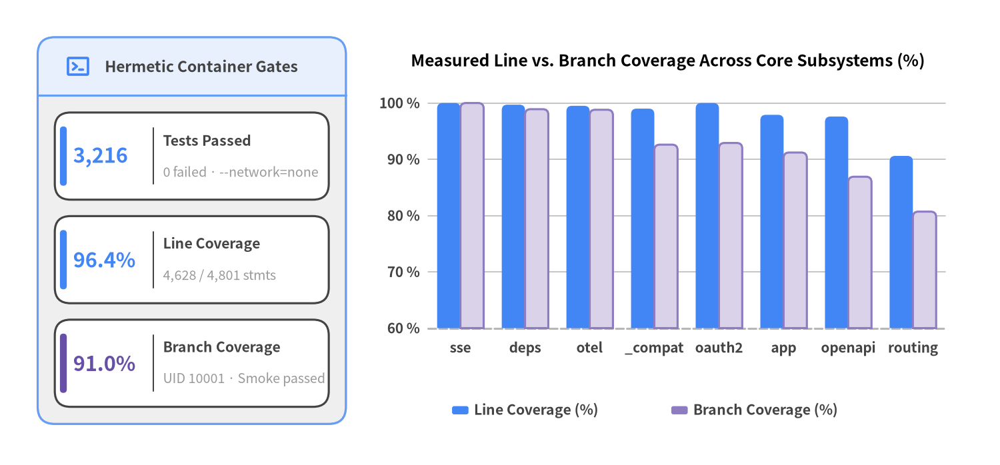
Source Code
from drawlib.canvas import save, setup
from drawlib.charts.bar import BarChart
from drawlib.icons import phosphor
from drawlib.smartarts import KpiCards, Panel
from drawlib.styles import Styles
setup(width=146, height=68, dpi=150)
# Left: Hermetic Container Verification Panel + KPI Stack
left_panel = Panel(
"Hermetic Container Gates",
style=Styles.Neutral,
header_style=Styles.PrimaryNeutral,
text_style=Styles.DarkBold.patch(text_size=11.0),
icon=phosphor.terminal_window,
icon_style=Styles.PrimaryBold,
header_variant="filled",
header_height=8.5,
)
left_panel.draw((5.5, 6.0), width=45.0, height=56.5)
l_xy, l_w, l_h = left_panel.get_content_box(
(5.5, 6.0), width=45.0, height=56.5, padding=(2.5, 2.5)
)
kpis = KpiCards(
style=Styles.White,
metric_style=Styles.PrimaryBold.patch(text_size=14.8),
text_style=Styles.DarkBold.patch(text_size=10.2),
description_style=Styles.Muted.patch(text_size=9.5),
accent_style=Styles.PrimaryFlat,
accent_position="left_pill",
metric_layout="left_column",
metric_width_ratio=0.36,
spacing=2.4,
)
kpis.add("3,216", "Tests Passed", "0 failed · --network=none")
kpis.add("96.4%", "Line Coverage", "4,628 / 4,801 stmts")
kpis.add(
"91.0%",
"Branch Coverage",
"UID 10001 · Smoke passed",
accent_style=Styles.SecondaryFlat,
metric_style=Styles.SecondaryBold.patch(text_size=14.8),
)
kpis.draw(xy=l_xy, width=l_w, height=l_h, columns=1)
# Right: Core Subsystem Line vs Branch Coverage Grouped BarChart
chart = BarChart(
axis_line_style=Styles.MutedDashed,
categories=[
"sse",
"deps",
"otel",
"_compat",
"oauth2",
"app",
"openapi",
"routing",
],
width=87.0,
height=46.5,
title="Measured Line vs. Branch Coverage Across Core Subsystems (%)",
title_style=Styles.BlackBold.patch(text_size=11.8),
orientation="vertical",
bar_mode="group",
bar_width_ratio=0.72,
bar_r=0.8,
axis_text_style=Styles.DarkBold.patch(text_size=10.0),
grid_style=Styles.MutedThin,
)
chart.add_series(
"Line Coverage (%)",
[100.0, 99.7, 99.5, 99.0, 100.0, 97.9, 97.6, 90.6],
style=Styles.PrimaryFlat,
)
chart.add_series(
"Branch Coverage (%)",
[100.0, 98.9, 98.8, 92.6, 92.9, 91.2, 86.9, 80.7],
style=Styles.SecondaryNeutral,
)
chart.configure_y_axis(min_value=60.0, max_value=105.0, tick_step=10.0, unit="%")
chart.draw(xy=(54.0, 15.0))
chart.draw_legend(
xy=(66.0, 8.0),
text_style=Styles.DarkBold.patch(text_size=10.2),
orientation="horizontal",
item_gap=8.0,
)
save()
Runtime Verification Summary (RV-01 – RV-04)
| Verification Gate | Status | Duration | Evidence & Configuration Details |
|---|---|---|---|
RV-01 Harness Image Build |
PASSED |
0.79s (cached) |
.pni/dockerfiles/root/Dockerfile (PYTHON_VERSION=3.12, non-root UID 10001, isolated pni-venv) |
RV-02 Air-Gapped Test Suite |
PASSED |
265.57s |
3,228 collected: 3,216 passed, 0 failed, 0 errors, 12 skipped under --network=none |
RV-03 Measured Coverage |
PASSED |
(with RV-02) |
96.4% line (4,628 / 4,801 stmts) and 91.0% branch (1,419 / 1,560 branches) via pytest-cov |
RV-04 Library Smoke Check |
PASSED |
3.36s |
Clean zero-side-effect import (importlib.import_module("fastapi") -> "Imported fastapi cleanly") |
FastAPI's pyproject.toml test harness enforces exceptional rigor (python_test_audit: 95/100, Grade S): --strict-config, --strict-markers, strict_xfail = true, filterwarnings = ["error"], timeout = "20", and inline-snapshot verification of generated OpenAPI 3.1 schemas. Static test inspection identified only 2 assertion-free test functions across 1,835 test definitions (tests/test_multipart_installation.py:141, where warnings.catch_warnings(record=True) is not bound or asserted, and tests/test_webhooks_security.py:34).
Lowest-Covered Modules (Measured Ascending Order)
Examining the bottom of the coverage distribution confirms that core runtime logic is covered above 90%, while 0.0% entries consist solely of 1–2 line Starlette re-export shims exercised by docs_src/ tutorial integration suites (which [tool.pytest] excludes during core unit runs via --ignore=docs_src):
| Module Path | Line Coverage | Branch Coverage | Covered / Total Stmts | Missing Lines | Root-Cause Engineering Explanation |
|---|---|---|---|---|---|
fastapi/__main__.py |
0.0% |
— |
0 / 2 |
[1, 3] |
2-line python -m fastapi module entrypoint delegating directly to fastapi.cli:main |
fastapi/middleware/cors.py |
0.0% |
— |
0 / 1 |
[1] |
1-line Starlette CORSMiddleware convenience re-export shim |
fastapi/middleware/gzip.py |
0.0% |
— |
0 / 1 |
[1] |
1-line Starlette GZipMiddleware convenience re-export shim |
fastapi/middleware/httpsredirect.py |
0.0% |
— |
0 / 1 |
[1] |
1-line Starlette HTTPSRedirectMiddleware convenience re-export shim |
fastapi/middleware/trustedhost.py |
0.0% |
— |
0 / 1 |
[1] |
1-line Starlette TrustedHostMiddleware convenience re-export shim |
fastapi/templating.py |
0.0% |
— |
0 / 1 |
[1] |
1-line Starlette Jinja2Templates convenience re-export shim |
fastapi/responses.py |
86.7% |
— |
26 / 30 |
[65, 66, 95, 96] |
@deprecated UJSONResponse.render & ORJSONResponse.render bodies skipped when optional ujson/orjson C extensions are absent |
fastapi/cli.py |
87.5% |
50.0% |
7 / 8 |
[13] |
cli_main() delegation branch to external fastapi-cli; core unit test mocks cli_main = None to verify clean RuntimeError fallback |
6. Deep Dive: Security, Supply Chain & API Surface
FastAPI v0.162.2 maintains an exemplary framework security posture (security_vulnerability_audit: 91/100, Grade S; security axis: 92/100): all 6 core runtime dependencies carry zero CVEs, deterministic SAST scanning across 52 source modules (19,837 LOC) detects zero CWE-classified dangerous execution sinks, and Trivy + AST scans confirm zero hardcoded secrets and zero container IaC misconfigurations. Vulnerability findings are strictly isolated to 7 transitive advisories in the development/optional uv.lock (1 HIGH in dnspython@2.8.0 -> 2.9.0) and 398 OS-layer advisories inside the ephemeral debian 12.13 CI test image.
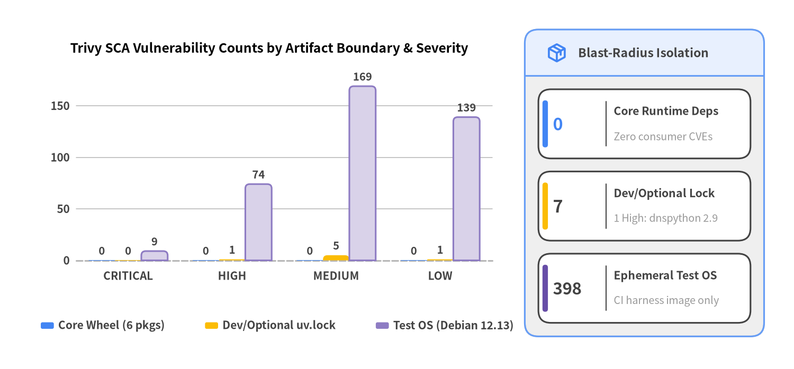
Source Code
from drawlib.canvas import save, setup
from drawlib.charts.bar import BarChart
from drawlib.icons import phosphor
from drawlib.smartarts import KpiCards, Panel
from drawlib.styles import Styles
setup(width=146, height=68, dpi=150)
# Left: Grouped BarChart comparing Severity Counts across the 3 Artifact Scopes
chart = BarChart(
axis_line_style=Styles.MutedDashed,
categories=["CRITICAL", "HIGH", "MEDIUM", "LOW"],
width=88.0,
height=46.5,
title="Trivy SCA Vulnerability Counts by Artifact Boundary & Severity",
title_style=Styles.BlackBold.patch(text_size=11.8),
orientation="vertical",
bar_mode="group",
bar_width_ratio=0.76,
bar_r=0.8,
axis_text_style=Styles.DarkBold.patch(text_size=10.0),
grid_style=Styles.MutedThin,
value_text_style=Styles.DarkBold.patch(text_size=9.8),
value_format="{:.0f}",
)
chart.add_series("Core Wheel (6 pkgs)", [0, 0, 0, 0], style=Styles.PrimaryFlat)
chart.add_series("Dev/Optional uv.lock", [0, 1, 5, 1], style=Styles.WarningFlat)
chart.add_series("Test OS (Debian 12.13)", [9, 74, 169, 139], style=Styles.SecondaryNeutral)
chart.configure_y_axis(min_value=0.0, max_value=195.0, tick_step=50.0, label="CVE Count")
chart.draw(xy=(5.5, 15.0))
chart.draw_legend(
xy=(7.5, 8.0),
text_style=Styles.DarkBold.patch(text_size=10.0),
orientation="horizontal",
item_gap=4.2,
)
# Right: Boundary Isolation Summary Panel
panel = Panel(
"Blast-Radius Isolation",
style=Styles.Neutral,
header_style=Styles.PrimaryNeutral,
text_style=Styles.DarkBold.patch(text_size=11.0),
icon=phosphor.package,
icon_style=Styles.PrimaryBold,
header_variant="filled",
header_height=8.5,
)
panel.draw((96.5, 6.0), width=44.0, height=56.5)
r_xy, r_w, r_h = panel.get_content_box(
(96.5, 6.0), width=44.0, height=56.5, padding=(2.5, 2.5)
)
kpis = KpiCards(
style=Styles.White,
metric_style=Styles.PrimaryBold.patch(text_size=15.5),
text_style=Styles.DarkBold.patch(text_size=10.2),
description_style=Styles.Muted.patch(text_size=9.5),
accent_style=Styles.PrimaryFlat,
accent_position="left_pill",
metric_layout="left_column",
metric_width_ratio=0.32,
spacing=2.4,
)
kpis.add("0", "Core Runtime Deps", "Zero consumer CVEs")
kpis.add(
"7",
"Dev/Optional Lock",
"1 High: dnspython 2.9",
accent_style=Styles.WarningFlat,
metric_style=Styles.WarningBold.patch(text_size=15.5),
)
kpis.add(
"398",
"Ephemeral Test OS",
"CI harness image only",
accent_style=Styles.SecondaryFlat,
metric_style=Styles.DarkBold.patch(text_size=15.0),
)
kpis.draw(xy=r_xy, width=r_w, height=r_h, columns=1)
save()
6.1 Supply-Chain Hygiene, Packaging & Governance Baseline
FastAPI's PEP 621 pyproject.toml manifest and dependency architecture (dependencies axis: 96/100) minimize downstream supply-chain exposure by keeping the default pip install fastapi footprint ultra-lean while isolating optional runtime integrations ([standard], [opentelemetry], [all]) and PEP 735 [dependency-groups] (dev, tests, docs, translations, github-actions) behind a reproducible uv.lock.
| Supply-Chain & Governance Gate | Metric / Value | Verdict | Architectural & Compliance Evidence |
|---|---|---|---|
Deterministic Lockfile (has_lockfile) |
True (uv.lock) |
PASS |
Reproducible multi-group dependency graph committed under uv |
Core Runtime Dependencies (dependencies_count) |
6 packages |
PASS |
Ultra-lean ASGI, validation, typing, inline docs, and OTel API surface |
Unpinned Specifiers (unpinned_dependencies_count) |
0 |
PASS |
Every dependency declares an explicit SemVer >= floor without upper-cap lock-in |
Dual Licensing Clarity (has_license) |
True |
PASS |
Repository Apache-2.0 LICENSE + upstream FastAPI MIT LICENSE-FASTAPI |
| Committed / Hardcoded Secrets | 0 files / 0 literals |
PASS |
Clean across both Trivy secret scanner and deterministic AST literal inspection |
AST Dangerous Sinks (ast_dangerous_sinks_count) |
0 |
PASS |
Zero CWE-78/89/94/502/22 execution or deserialization sinks in fastapi/ |
Standalone HTTP Endpoints (api_endpoints_count) |
0 |
PASS |
Reusable library archetype; binds zero network ports upon import |
Repo Governance (SECURITY.md / Dependabot) |
False / False |
WARN |
Omitted in this standalone showcase snapshot (upstream FastAPI publishes GitHub Security Advisories) |
Core Wheel Runtime Dependency Inventory (0 CVEs)
| Core Package | pyproject.toml Constraint |
Resolved uv.lock |
Primary Architectural Responsibility | Trivy CVEs |
|---|---|---|---|---|
starlette |
>=0.46.0 |
1.7.0 |
Asynchronous ASGI 3.0 routing, lifespan, WebSockets, middleware & TestClient |
0 |
pydantic |
>=2.9.0 |
2.13.5 |
Rust-backed pydantic-core TypeAdapter validation, serialization & JSON Schema |
0 |
typing-extensions |
>=4.8.0 |
4.16.0 |
Backported typing constructs (Annotated, @deprecated, TypedDict, TypeAliasType) |
0 |
typing-inspection |
>=0.4.2 |
0.4.4 |
High-speed runtime Annotated and generic signature introspection for Dependant DAGs |
0 |
annotated-doc |
>=0.0.2 |
0.0.5 |
Zero-overhead PEP 727 Doc("...") inline parameter documentation carrier |
0 |
opentelemetry-api |
>=1.44.0 |
1.45.1 |
Vendor-neutral distributed tracing & metrics API (no-op until an OTel SDK is configured) |
0 |
6.2 Vulnerability Triage: Core Wheel vs. uv.lock vs. Test Harness OS
Containerized Trivy 0.69.3 scanning (engine=docker, scanned_filesystem=True, scanned_resolved_image=True against .pni/dockerfiles/Dockerfile) flagged an overall scan status of failed due to 405 combined advisories (7 application lockfile + 398 OS base-image). Separating these results by deployment boundary is essential for accurate risk assessment:
| Artifact Scope | CRITICAL | HIGH | MEDIUM | LOW | Total | Downstream Consumer Impact & Remediation |
|---|---|---|---|---|---|---|
1. FastAPI Core Runtime Wheel (6 pkgs) |
0 |
0 |
0 |
0 |
0 |
None: Downstream fastapi installations resolve clean latest SemVer-compatible packages |
2. Transitive Dev / Optional uv.lock |
0 |
1 |
5 |
1 |
7 |
Dev/CI Only: dnspython@2.8.0 (via optional email-validator); upgrade via uv lock --upgrade-package dnspython (>=2.9.0) |
3. Ephemeral Test Harness OS (debian 12.13) |
9 |
74 |
169 |
139 |
398 |
None (Never Shipped): Air-gapped bookworm-slim pytest runner; refresh via apt-get upgrade -y or trixie-slim |
Top Pre-Sorted CRITICAL & HIGH Vulnerability Advisories
The table below renders the exact pre-sorted top CRITICAL and HIGH Trivy findings across uv.lock and the debian 12.13 test-harness container image, including exact installed and upstream fixed versions:
| Severity | CVE ID | Package & Installed Version | Ecosystem | Fixed Version | Advisory Summary |
|---|---|---|---|---|---|
CRITICAL |
CVE-2026-42010 |
libgnutls30@3.7.9-2+deb12u5 |
debian |
3.7.9-2+deb12u7 |
gnutls: Authentication Bypass via NUL Character in Username |
CRITICAL |
CVE-2026-31789 |
libssl3@3.0.18-1~deb12u2 |
debian |
3.0.19-1~deb12u2 |
openssl: Heap buffer overflow on 32-bit systems from large X.509 certificate processing |
CRITICAL |
CVE-2026-31789 |
openssl@3.0.18-1~deb12u2 |
debian |
3.0.19-1~deb12u2 |
openssl: Heap buffer overflow on 32-bit systems from large X.509 certificate processing |
CRITICAL |
CVE-2026-8376 |
perl-base@5.36.0-7+deb12u3 |
debian |
5.36.0-7+deb12u4 |
perl: Heap buffer overflow when compiling regular expressions on 32-bit builds |
CRITICAL |
CVE-2023-45853 |
zlib1g@1:1.2.13.dfsg-1 |
debian |
(no upstream fix) | zlib: Integer overflow and resultant heap-based buffer overflow in zipOpenNewFileInZip4_6 |
CRITICAL |
CVE-2026-33845 |
libgnutls30@3.7.9-2+deb12u5 |
debian |
3.7.9-2+deb12u7 |
gnutls: Denial of Service via DTLS zero-length fragment |
CRITICAL |
CVE-2025-7458 |
libsqlite3-0@3.40.1-2+deb12u2 |
debian |
(no upstream fix) | sqlite: SQLite integer overflow |
CRITICAL |
CVE-2026-13221 |
perl-base@5.36.0-7+deb12u3 |
debian |
5.36.0-7+deb12u4 |
perl: Incorrect regular expression processing via large regular expressions |
CRITICAL |
CVE-2026-42496 |
perl-base@5.36.0-7+deb12u3 |
debian |
5.36.0-7+deb12u4 |
perl-archive-tar: Path traversal via crafted symlinks allows arbitrary file access |
HIGH |
CVE-2026-114605 |
dnspython@2.8.0 |
uv |
2.9.0 |
dnspython: Denial of Service via excessive DNS compression pointer traversal (CVSS 7.5) |
HIGH |
CVE-2026-45447 |
libssl3@3.0.18-1~deb12u2 |
debian |
3.0.20-1~deb12u2 |
openssl: Heap Use-After-Free in OpenSSL PKCS7_verify() |
HIGH |
CVE-2026-16742 |
libsystemd0@252.39-1~deb12u1 |
debian |
(no upstream fix) | systemd: systemd-homed local privilege escalation via missing home-record signature check |
HIGH |
CVE-2026-16742 |
libudev1@252.39-1~deb12u1 |
debian |
(no upstream fix) | systemd: systemd-homed local privilege escalation via missing home-record signature check |
HIGH |
CVE-2026-45447 |
openssl@3.0.18-1~deb12u2 |
debian |
3.0.20-1~deb12u2 |
openssl: Heap Use-After-Free in OpenSSL PKCS7_verify() |
HIGH |
CVE-2026-76844 |
zlib1g@1:1.2.13.dfsg-1 |
debian |
(no upstream fix) | webpack-dev-middleware / zlib1g metadata match: Information Disclosure via Path Traversal |
[!NOTE] Container IaC Hardening (
SEC-02): Trivy reported0Dockerfile misconfigurations (misconfigurations = []). The test harness pinsghcr.io/astral-sh/uv:python3.12-bookworm-slimby SHA-256 digest, provisions unprivileged userpni(UID 10001), and runs offline (--network=none). Active.pni/pni.tomldesign waiverDS-0026appropriately exempts batchpytestcontainers from daemonHEALTHCHECKdirectives.
6.3 AST Dangerous Code Sinks (CWE) & Built-In Security Architecture
Because FastAPI is an installable framework library (runtime_types = ["library"]), it exposes 0 standalone HTTP endpoints (api_endpoints = []) while providing downstream applications with strongly typed, dependency-injected security extractors across fastapi/security/* (all achieving 100.0% statement coverage under hermetic testing).
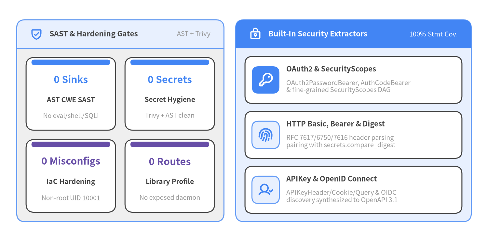
Source Code
from drawlib.canvas import save, setup
from drawlib.icons import phosphor
from drawlib.smartarts import CardList, KpiCards, Panel
from drawlib.styles import Styles
setup(width=146, height=72, dpi=150)
# Left Panel: 2x2 SAST, Secret, IaC & Attack-Surface Verification KPIs
left_panel = Panel(
"SAST & Hardening Gates",
"AST + Trivy",
style=Styles.Neutral,
header_style=Styles.PrimaryNeutral,
text_style=Styles.DarkBold.patch(text_size=11.0),
description_style=Styles.Muted.patch(text_size=9.8),
icon=phosphor.shield_check,
icon_style=Styles.PrimaryBold,
header_variant="filled",
header_height=8.5,
)
left_panel.draw((5.0, 5.5), width=62.0, height=60.5)
l_xy, l_w, l_h = left_panel.get_content_box(
(5.0, 5.5), width=62.0, height=60.5, padding=(2.8, 2.8)
)
sast_kpis = KpiCards(
style=Styles.White,
metric_style=Styles.PrimaryBold.patch(text_size=14.5),
text_style=Styles.DarkBold.patch(text_size=10.2),
description_style=Styles.Muted.patch(text_size=9.5),
accent_style=Styles.PrimaryFlat,
accent_position="top_bar",
metric_layout="top_stack",
spacing=2.8,
)
sast_kpis.add("0 Sinks", "AST CWE SAST", "No eval/shell/SQLi")
sast_kpis.add("0 Secrets", "Secret Hygiene", "Trivy + AST clean")
sast_kpis.add(
"0 Misconfigs",
"IaC Hardening",
"Non-root UID 10001",
accent_style=Styles.SecondaryFlat,
metric_style=Styles.SecondaryBold.patch(text_size=14.5),
)
sast_kpis.add(
"0 Routes",
"Library Profile",
"No exposed daemon",
accent_style=Styles.SecondaryFlat,
metric_style=Styles.SecondaryBold.patch(text_size=14.5),
)
sast_kpis.draw(xy=l_xy, width=l_w, height=l_h, columns=2)
# Right Panel: Built-In fastapi/security/* Primitives CardList
right_panel = Panel(
"Built-In Security Extractors",
"100% Stmt Cov.",
style=Styles.PrimaryNeutral,
header_style=Styles.PrimaryFlat,
text_style=Styles.WhiteBold.patch(text_size=11.0),
description_style=Styles.White.patch(text_size=9.8),
icon=phosphor.lock_key,
icon_style=Styles.WhiteBold,
header_variant="filled",
header_height=8.5,
)
right_panel.draw((70.5, 5.5), width=70.5, height=60.5)
r_xy, r_w, r_h = right_panel.get_content_box(
(70.5, 5.5), width=70.5, height=60.5, padding=(2.8, 2.5)
)
sec_cards = CardList(
style=Styles.White,
text_style=Styles.DarkBold.patch(text_size=10.6),
description_style=Styles.Muted.patch(text_size=9.6),
badge_shape="rounded_rect",
badge_style=Styles.PrimaryNeutral,
icon_style=Styles.PrimaryBold,
direction="vertical",
spacing=2.4,
)
sec_cards.add(
"OAuth2 & SecurityScopes",
"OAuth2PasswordBearer, AuthCodeBearer\n& fine-grained SecurityScopes DAG",
icon=phosphor.key,
badge_style=Styles.PrimaryFlat,
icon_style=Styles.WhiteBold,
)
sec_cards.add(
"HTTP Basic, Bearer & Digest",
"RFC 7617/6750/7616 header parsing\npairing with secrets.compare_digest",
icon=phosphor.fingerprint,
)
sec_cards.add(
"APIKey & OpenID Connect",
"APIKeyHeader/Cookie/Query & OIDC\ndiscovery synthesized to OpenAPI 3.1",
icon=phosphor.user_check,
)
sec_cards.draw(xy=r_xy, width=r_w, height=r_h)
save()
CWE SAST Audit & Built-In fastapi/security/* Subsystems
- Zero CWE Execution Sinks (
SEC-04): Deterministic AST scanning across all52source files verified complete absence of SQL string interpolation (CWE-89), shell command execution (CWE-78, zeroos.systemorsubprocess(..., shell=True)), dynamic code evaluation or unsafe deserialization (CWE-94/CWE-502, zeroeval,exec,pickle, or unsafeyaml.load), and unvalidated file traversal (CWE-22;fastapi/routing.pynormalizes mounted SPA static paths viaos.path.realpathcontainment checks before serving files). - Co-Located Authorization & OpenAPI 3.1 Contract Generation (
SEC-05): Every security class subclassingSecurityBase(fastapi/security/base.py) acts simultaneously as an asyncDepends()/Security()request validator and an OpenAPI 3.1securitySchemesdescriptor—ensuring authorization rules enforced at runtime never drift from published API documentation:
| Security Module | Exported Primitives | Runtime Enforcement & OpenAPI 3.1 Integration | Measured Stmt Cov. |
|---|---|---|---|
fastapi/security/oauth2.py |
OAuth2, OAuth2PasswordBearer, OAuth2AuthorizationCodeBearer, OAuth2PasswordRequestForm (Strict), SecurityScopes |
Extracts Bearer tokens, parses RFC 6749 form credentials, and propagates required Security(..., scopes=[...]) across nested Dependant sub-trees |
100.0% (66/66) |
fastapi/security/http.py |
HTTPBasic, HTTPBasicCredentials, HTTPBearer, HTTPDigest, HTTPAuthorizationCredentials |
Strictly validates Authorization schemes, handles malformed Base64/ASCII payloads with 401 WWW-Authenticate headers, and structures credentials for constant-time secrets.compare_digest checks |
100.0% (81/81) |
fastapi/security/api_key.py |
APIKeyHeader, APIKeyCookie, APIKeyQuery |
Enforces required or optional (auto_error=False) API keys across headers, cookies, and query parameters |
100.0% (42/42) |
fastapi/security/open_id_connect_url.py |
OpenIdConnect |
Binds OIDC discovery URLs into OpenAPI 3.1 openIdConnect security definitions and validates Authorization headers |
100.0% (21/21) |